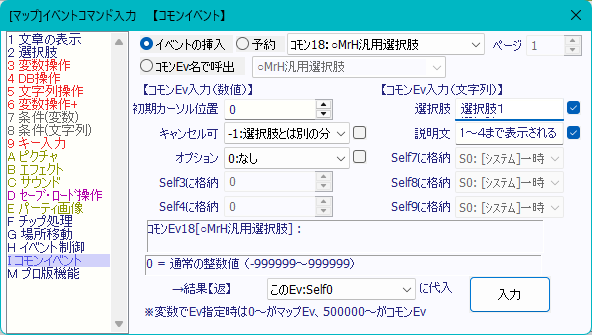
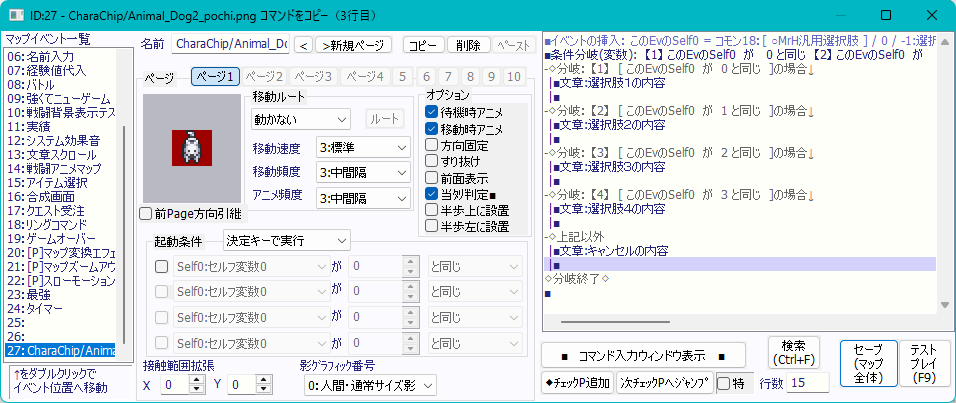
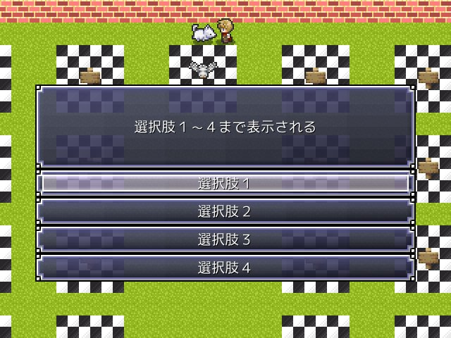
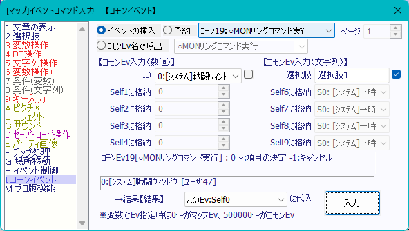
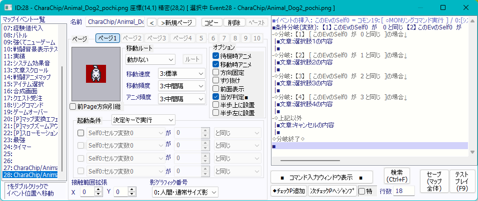
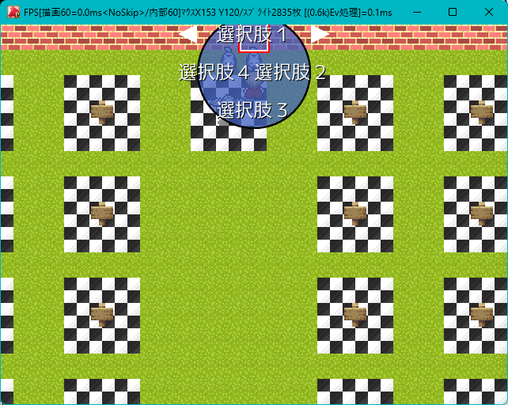
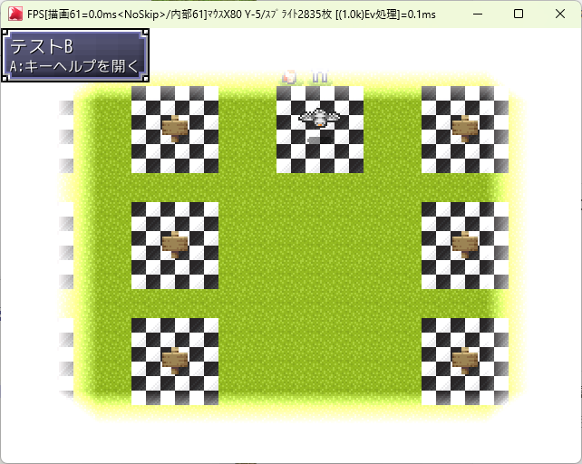
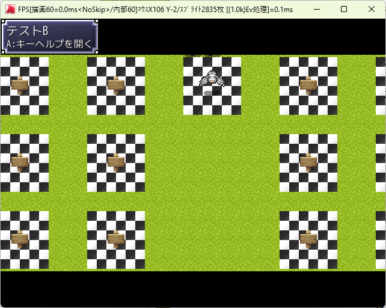

CommonEv
コモンイベント
目次
○ゲーム起動
ゲーム中の様々な変数やフラグが初期化された後ロゴが表示され、タイトル画面が表示されます。
【コモンEv入力（数値）】
- モード
- ［０］ゲーム開始初期化
- 様々な変数やフラグが初期化された後ロゴが表示され、タイトル画面が表示されます。
- ［１］タイトル画面のみ
- タイトル画面のみ表示されます。※変数やフラグの初期化はされません。
- ［０］ゲーム開始初期化
○ﾃﾞﾓ中断
デモ用イベントを中断してタイトル画面に切り替えます。
○[P]ｷｰ押しﾃﾞﾓ中断
何かしらのボタンが押された時、デモを中断します。
○ロード処理呼出
ロード処理を呼び出します。
また、主人公レベルの同期が有効な場合、主人公レベルの同期も行います。
○ﾃｷｽﾄｽｸﾘﾌﾟﾄ読み込み
▲マウス入力
キー/マウスが入力されるまで処理を停止させます。
【コモンEv入力（数値）】
- Self0に格納
- ［０］Aボタンのみ受付
- Aボタン／マウスクリックの入力のみ受け付けます。マウス入力はAボタンが返されます
- ［１］Bボタンのみ受付
- Bボタン／マウスクリックの入力のみ受け付けます。マウス入力はBボタンが返されます
- ［２］ABボタン受付[ﾏｳｽ:A]
- A／B／マウスクリックの入力を受け付けます。マウス入力はAボタンが返されます
- ［３］ABボタン受付[ﾏｳｽ:B]
- A／B／マウスクリックの入力を受け付けます。マウス入力はBボタンが返されます
- ［０］Aボタンのみ受付
▲ボタン入力
特定のボタン（A・B・X・Y・L1・L2・R1・R2・矢印キー）を自動で入力させるか、入力されるまで待機させるかを指定できます。
▲全ボタン入力
A・B・X・Y・L1・L2・R1・R2・矢印キーすべてに対して指定できます。
【コモンEv入力（数値）】
- 入力待ち
- ［０］待たない
- 方向／ボタン１／ボタン２の入力を待たない
- ［１］待つ
- 方向／ボタン１／ボタン２が押されるまでウェイトされる
- ［０］待たない
- 方向
- ［０］～［３］矢印キーの指定
- ボタン１
- ［０］～［７］A・B・Xキーの指定
- ボタン２
- ［０］～［３１］Y・L1・L2・R1・R2キーの指定
【結果【入力】】
矢印キー：上（８）下（２）左（４）右（６）
A（Z／Enter）キー：１０
B（X／Esc）キー：１１
X（C／Shift）キー：１２
Y（D）キー：１３
L1（A）キー：１４
L2（Q）キー：１６
R1（S）キー：１５
R2（W）キー：１７
▲Yボタン入力
Y（D）キーに対して詳細に指定できます。
【コモンEv入力（数値）】
- ウェイト
- ［０］ウェイトしない
- Y（D）キーの入力を待たない
- ［１］押すまで待つ
- Y（D）キーの入力が入力されるまで待機する
- ［２］連打禁止
- ウェイトしない＋押しっぱなしによる連打を検知しないようにする
- ［３］押すまで待つ＆連打禁止
- 押すまで待つ＋押しっぱなしによる連打を検知しないようにする
- ［０］ウェイトしない
【結果【キー返し】】
Y（D）キー：１３
▲L1ボタン入力
L1（A）キーに対して詳細に指定できます。
【コモンEv入力（数値）】
- ウェイト
- ［０］ウェイトしない
- L1（A）キーの入力を待たない
- ［１］押すまで待つ
- L1（A）キーの入力が入力されるまで待機する
- ［２］連打禁止
- ウェイトしない＋押しっぱなしによる連打を検知しないようにする
- ［３］押すまで待つ＆連打禁止
- 押すまで待つ＋押しっぱなしによる連打を検知しないようにする
- ［０］ウェイトしない
【結果【キー返し】】
L1（A）キー：１４
▲R1ボタン入力
R1（S）キーに対して詳細に指定できます。
【コモンEv入力（数値）】
- ウェイト
- ［０］ウェイトしない
- R1（S）キーの入力を待たない
- ［１］押すまで待つ
- R1（S）キーの入力が入力されるまで待機する
- ［２］連打禁止
- ウェイトしない＋押しっぱなしによる連打を検知しないようにする
- ［３］押すまで待つ＆連打禁止
- 押すまで待つ＋押しっぱなしによる連打を検知しないようにする
- ［０］ウェイトしない
【結果【キー返し】】
R1（S）キー：１５
▲L2ボタン入力
L2（Q）キーに対して詳細に指定できます。
【コモンEv入力（数値）】
- ウェイト
- ［０］ウェイトしない
- L2（Q）キーの入力を待たない
- ［１］押すまで待つ
- L2（Q）キーの入力が入力されるまで待機する
- ［２］連打禁止
- ウェイトしない＋押しっぱなしによる連打を検知しないようにする
- ［３］押すまで待つ＆連打禁止
- 押すまで待つ＋押しっぱなしによる連打を検知しないようにする
- ［０］ウェイトしない
【結果【キー返し】】
L2（Q）キー：１６
▲R2ボタン入力
R2（W）キーに対して詳細に指定できます。
【コモンEv入力（数値）】
- ウェイト
- ［０］ウェイトしない
- R2（W）キーの入力を待たない
- ［１］押すまで待つ
- R2（W）キーの入力が入力されるまで待機する
- ［２］連打禁止
- ウェイトしない＋押しっぱなしによる連打を検知しないようにする
- ［３］押すまで待つ＆連打禁止
- 押すまで待つ＋押しっぱなしによる連打を検知しないようにする
- ［０］ウェイトしない
【結果【キー返し】】
R2（W）キー：１７
○BGMモード再生
BGM再生に関するオプションを指定できます。
【コモンEv入力（数値）】
- BGM番号
- システムデータベース（SDB）の「タイプ１：BGMリスト」で設定したBGMを指定します
- 処理
- ［０］BGM再生
- BGM番号で指定したBGMを再生します
- ［１］BGM記憶
- 現在のBGM番号を「結果【返】」に代入します
- ［２］最終BGM演奏
- 直前に再生していたBGMを再生します
- ［３］BGM記憶（戦闘用）
- 戦闘中イベント等でBGMを変更する際に、現在再生されているBGMを記憶します
※通常のイベントでは利用しません
- 戦闘中イベント等でBGMを変更する際に、現在再生されているBGMを記憶します
- ［４］BGM復帰（戦闘用）
- 戦闘中イベント等でBGMを、変更前に再生されていたBGMを再生します
※通常のイベントでは利用しません
- 戦闘中イベント等でBGMを、変更前に再生されていたBGMを再生します
- ［０］BGM再生
○マップBGMモード再生
呼び出すだけで現在のマップのBGMを演奏します。
○選択肢位置設定
［マップ］イベントコマンド入力の「２ 選択肢」で設定した選択肢に対して、選択肢ウィンドウの位置を調整します。
【コモンEv入力（数値）】
- 位置
- ［－１］選択肢自動調整ON
- ［０］１０個
- ［１］９個
- ［２］８個
- ［３］７個
- ［４］６個
- ［５］５個
- ［６］４個
- ［７］３個
- ［８］２個
- ［９］１個
- ［１０］選択肢自動調整OFF
いずれも、「２ 選択肢」に入力・設定した数に応じて設定します。
選択肢自動調整ONの場合は、このコモンを呼び出さなくても
選択肢の数に合わせて自動的に選択肢ウィンドウの位置が調整されます。選択肢自動調整OFFおよび1～10個の場合は、選択肢の自動調整を行いません。
【設定方法】
以下の順番でイベントを挿入してください。
①コモンイベント１４番 例：［７］３個
②文章の表示（無ければ省略可）
③選択肢 例：３つの選択肢を設定
○選択肢座標設定1
【コモンEv入力（数値）】
- モード
- X座標か、Y座標に代入するかを設定します。
- 演算
- 選択肢の座標に対して、代入値を代入する方式を指定します。
- 代入値
- 選択肢座標に代入する値です。
取得のみの場合は無効です。
- 選択肢座標に代入する値です。
○文章の表示モード変更
メッセージウィンドウの表示形式を変更します。
【コモンEv入力（数値）】
- モード
- ［０］通常メッセージ
- 通常のメッセージウィンドウでの表示になります
- ［１］ノベルメッセージ
- メッセージウィンドウが表示されず、画面全体に文字が表示されます。
ノベルゲーム等に活用できます。
- メッセージウィンドウが表示されず、画面全体に文字が表示されます。
- ［０］通常メッセージ
- 文章の表示位置
- 文章の表示位置を下か中か上の中から選択します。
- ウィンドウ種別
- ウィンドウの種別を通常か暗くするか透明にするかを選択します。
{kind=link}
{kind=link}
○巻き戻し可能文章処理
巻き戻し可能なメッセージの処理です。
Bボタンでメニュー、Yボタンを押しながらAボタンで巻き戻します。
文章の途中でセーブしてロードすると、その地点のメッセージからゲームが再開されます。
主にノベルゲーム用です。
【コモンEv入力（数値）】
- モード
- 最後
- 最後のメッセージのみ設定してください！
その後に選択肢やアイテム増減、バトルなどがある場合はこれに設定してください！
- 最後のメッセージのみ設定してください！
- 最初
- 最初のメッセージのみ設定してください！
- 通常
- 途中のメッセージに設定してください！
- 最後
- 呼び出しEv
- モードが最初の時のみ使用します。
変数操作+で呼び出し元のイベントIDを取得して、それを取得した変数の呼び出し値をこの引数に代入します。
- モードが最初の時のみ使用します。
- ┗EV種別
- コモン
- 呼び出し元がコモンイベントの場合のみ使用してください！
- マップイベント
- 呼び出し元がマップイベントの場合のみ使用してください！
- コモン
【コモンEv入力（文字列）】
- 台詞
- 表示する台詞を設定します。
- 選択肢
- 表示する選択肢を設定します。
「はい(改行)いいえ」を設定した場合は、「はい」「いいえ」が選択肢で表示されます。
- 表示する選択肢を設定します。
【結果】
モードが最後の場合は100、途中の場合は0、メニューの場合は-1、巻き戻しの場合は-2、選択肢の場合は0～9が返されます。
最後の場合は100が加算されます。
イベントコマンドサンプル
■変数操作+: CSelf11 = [処理]このｺﾓﾝｲﾍﾞﾝﾄID[ｺﾓﾝでなければ-1]
■ループ開始
|■文字列操作：CSelf5 = "あいうえお"
|■イベントの挿入[名]： ["○巻き戻し可能文章処理"] <コモンEv 17> / 0:最初 / CSelf11 / 500000:コモン / CSelf5 /
|■文字列操作：CSelf5 = "かきくけこ"
|■イベントの挿入[名]： ["○巻き戻し可能文章処理"] <コモンEv 17> / 1:通常 / 0 / 500000:コモン / CSelf5 /
|■文字列操作：CSelf5 = "さしすせそ"
|■イベントの挿入[名]： ["○巻き戻し可能文章処理"] <コモンEv 17> / 1:通常 / 0 / 500000:コモン / CSelf5 /
|■文字列操作：CSelf5 = "たちつてと"
|■イベントの挿入[名]： ["○巻き戻し可能文章処理"] <コモンEv 17> / 1:通常 / 0 / 500000:コモン / CSelf5 /
|■文字列操作：CSelf5 = "なにぬねの"
|■イベントの挿入[名]： CSelf99 = ["○巻き戻し可能文章処理"] <コモンEv 17> / -1:最後 / 0 / 500000:コモン / CSelf5 / 大丈夫(改行)もうダメだ(改行)おしまいだー(改行)そんなことはない(改行)きっと(改行)何かが(改行)起こるはずさ(改行)ドカーン
|■条件分岐(数値): 【1】 CSelf99 が 100 以上
|-◇分岐： 【1】 [ CSelf99 が 100 以上 ]の場合↓
| |■ループ中断
| |■
|◇分岐終了◇
|■
◇ループここまで◇◇
○文章のスクロール表示
設定した文章が下から上に流れるように表示します。また、ボタン／キーを押しっぱなしにすることで、流れる速度を早くすることが可能です。
文章の表示が終わるまでは、処理が中断されます。
【コモンEv入力（数値）】
- 文章速度[％]
- 何もボタン／キーを押していない場合の流れる文章速度を設定します
「100」が標準の速度です
「200」が2倍の速度です
「25」が1/4倍の速度です
- 何もボタン／キーを押していない場合の流れる文章速度を設定します
- 文字寄せ
- 中央に寄せるか、左に寄せるか、右に寄せるかを設定できます
- 文章サイズ
- 文章の文字サイズを変更します
マイナスの値に設定すると画面サイズに合わせて文字サイズが調整されます
「0」に設定するとメッセージの文字サイズが参照されます
- 文章の文字サイズを変更します
- 縁
- 文字に縁をつけるかどうかを変更します
- 文章早送り倍率
- ［１］早送りしない
- ボタン／キーを押下しても早送りさせない
- ［２～２０］ｘ２～２０
- ボタン／キーを押下した際に文章が早送りされる速度を設定できます
- ［１］早送りしない
【コモンEv入力（文字列）】
- 表示文章
- 実際に表示させる文字列を設定できます
○数値入力ウィンドウ
数字を入力するためのウィンドウを表示し、入力した数字を「結果【数値結果】」に代入します。
この機能により、ロックされたドアのパスコードを入力するといった演出が可能になります。
【コモンEv入力（数値）】
- マイナス許可
- ［０］マイナス禁止
- マイナスの値が指定できないようにします
- ［１］マイナス許可
- マイナスの値も指定できるようにします
- ［０］マイナス禁止
- 最大桁数
- 最大桁数を設定します
「１」～「９」までの間で指定してください
- 最大桁数を設定します
- キャンセル許可
- ［０］禁止
- ボタン／キーによるキャンセルを禁止します
- ［１］許可
- ボタン／キーによるキャンセルを許可します
- ［０］禁止
【コモンEv入力（文字列）】
- 説明文
- 数値入力ウィンドウに対する説明文を設定します
【結果】
確定した場合は入力した数値が返されます。
キャンセルした場合は「-999’999’999」が返されます。
○MrH汎用選択肢
［マップ］イベントコマンド入力の「２ 選択肢」で設定した選択肢とは別に、よりボタンの大きな選択肢ウィンドウを表示させることができます。
最大で４つまで選択肢を表示させることができます。
マウス入力やタッチ操作を検討している場合は、より有用な選択肢になります。
【コモンEv入力（数値）】
- 初期カーソル位置
- 表示した際の初期カーソル位置を設定します
０～３の間で設定します
- 表示した際の初期カーソル位置を設定します
- キャンセル可
- ［ー２］禁止
- ボタン／キーによるキャンセルを禁止します
- ［ー１］選択肢とは別の分岐
- キャンセル操作時に「結果【返】」に「ー１」を返します
- ［０］選択肢１番
- ［１］選択肢２番
- ［２］選択肢３番
- ［３］選択肢４番
- キャンセル時に「０」～「３」を返します
- ［ー２］禁止
- オプション
- ［０］なし
- オプションを指定しません
- ［１］決定音を鳴らさない
- 項目決定時に決定音を鳴らしません
- ［０］なし
【コモンEv入力（文字列）】
- 選択肢
- 選択肢の内容を文字列で指定します
改行することで複数の選択肢を指定します※最大で４つ
- 例１
- 例２
- 選択肢の内容を文字列で指定します
- 説明文
- MrH汎用選択肢についての説明文を設定します。
【設定一例】※スクリーンショット
【設定入力】
{kind=link}

{kind=link}

【設定結果】
{kind=link}

○MONリングコマンド実行
［マップ］イベントコマンド入力の「２ 選択肢」で設定した選択肢とは別に、円形の選択肢ウィンドウを表示させることができます。
最大で４つまで選択肢を表示させることができます。
通常の選択肢と比べ、よりグラフィカルかつコンパクトに選択肢を表示することができます。
【コモンEv入力（数値）】
- ID
- ユーザーデータベース（UDB）の４７番で設定したＭＯＮリングコマンド画像を指定します
【コモンEv入力（文字列）】
- 選択肢
- 選択肢の内容を文字列で指定します
改行することで複数の選択肢を指定します※最大で４つ
ボタン／キーでキャンセルした場合、「結果【結果】」に「ー１」を返します
- 例
- 選択肢の内容を文字列で指定します
【設定一例】※スクリーンショット
【設定入力】
{kind=link}

{kind=link}

【設定結果】
{kind=link}

○クイック通知
画面右上に簡易的なメッセージを表示させることができます。
【コモンEv入力（数値）】
- モード
- ［０］全消去
- 残っているクイック通知ウィンドウを全て削除します
- ［１］描画
- クイック通知ウィンドウを表示させます
- ［０］全消去
- 色
- ［０］通常
- そのままの色でクイック通知ウィンドウを表示します
- ［１］灰
- ［２］赤
- ［３］黄
- ［４］緑
- ［５］水
- ［６］青
- ［７］紫
- クイック通知ウィンドウ画像に選択した色を付与して表示します
- ［０］通常
【コモンEv入力（文字列）】
- 表示文上部
- 設定した文字列が表示されます
例として、入手したアイテム名などを設定させると良いでしょう
- 設定した文字列が表示されます
- 表示文本文
- 設定した文字列が表示されます
例として、アイテムを入手したことを使える文章を設定させると良いでしょう
- 設定した文字列が表示されます
○無限桁変数_加算/減算1～○無限桁変数_大小比較1
無限の桁数や小数点20桁までに対応した変数の計算処理です。
これによりウディタではできなかった±20億以上の計算や、小数点を含む計算が可能になります。
小数点の扱いが重要になる戦闘計算式や、数値がインフレしがちな必要経験値の計算や取得経験値の計算で使えるでしょう。
ただし、桁数を多くしすぎると重くなるので注意です！
○無限桁変数_加算/減算1～○無限桁変数_下限/上限1の場合、結果は文字列で返されます。
○無限桁変数_真偽比較1～○無限桁行為判定1の場合、結果は0か1の数値で返されます。
○無限桁変数_加算/減算1～○無限桁変数_少数付演算1
【コモンEv入力（文字列）】
- 左辺数値
- 右辺数値
- 左辺に対して右辺を加算/乗算/除算/剰余します。
○無限桁変数_少数付演算1の場合はその中の演算子の設定に応じて代入式が決定されます。
- 左辺に対して右辺を加算/乗算/除算/剰余します。
○無限桁変数_少数付演算1
【コモンEv入力（数値）】
- 演算子
- 左辺に対して右辺を加算/乗算/除算/剰余します。
左辺と右辺に関しては○無限桁変数_加算/減算1～○無限桁変数_剰余1と同じです。
○無限桁変数_整数変換1
左辺を整数に変換します。
(小数点以下の数値は切り捨てられます)
○無限桁変数_絶対値変換1
左辺を絶対値に変換します。
(マイナスからプラスになります)
○無限桁変数_下限/上限1
【コモンEv入力（数値）】
- 演算子
- 左辺に対して右辺の値に引き上げるか引き下げるかを設定します。
下限の場合は左辺より右辺の値が大きい場合のみ左辺の値が右辺の値で上書きされます。
上限の場合は左辺より右辺の値が小さい場合のみ左辺の値が右辺の値で上書きされます。
- 左辺に対して右辺の値に引き上げるか引き下げるかを設定します。
【コモンEv入力（文字列）】
- 左辺数値
- 右辺数値
- 左辺に対して右辺の値に引き上げるか引き下げます。
○無限桁変数_真偽比較1
【コモンEv入力（文字列）】
- 左辺数値
- 右辺数値
- 左辺の値と右辺の値が同じなら1、違うなら0が返されます。
○無限桁変数_大小比較1
【コモンEv入力（数値）】
- 演算子
- 左辺＞右辺
- 左辺の値が右辺の値より大きい場合は1が返されます。
- 左辺≧右辺
- 左辺の値が右辺の値より大きい場合は1が返されます。
また、左辺の値と右辺の値が同じ場合でも1が返されます。
- 左辺の値が右辺の値より大きい場合は1が返されます。
- 左辺≦右辺
- 左辺の値が右辺の値より小さい場合は1が返されます。
また、左辺の値と右辺の値が同じ場合でも1が返されます。
- 左辺の値が右辺の値より小さい場合は1が返されます。
- 左辺＜右辺
- 左辺の値が右辺の値より小さい場合は1が返されます。
- 左辺＞右辺
【コモンEv入力（文字列）】
- 左辺数値
- 右辺数値
- 左辺の値と右辺の値の比較に使用されます。
○無限桁行為判定1
【コモンEv入力（文字列）】
- 左辺数値
- 右辺数値
- 左辺の値と右辺の値の比較に使用されます。
○マスク描画～○マスク消去
マスクを追加/消去します。
画面サイズによるマスク画像の拡大縮小に対応します。
【コモンEv入力（数値）】
- マスクID
- マスク画像を設定します。
UDB「ﾏｽｸ画像設定1」で設定します。
- マスク画像を設定します。
- X座標/Y座標
- マスクを描画/消去するの座標を設定します。
- 基準位置
- マスクを左上か中央に描画/消去するかを設定します。
○マップの暗転処理
マップを白か黒かに暗転できます。イベントの演出などで利用できます。
【コモンEv入力（数値）】
- モード
- ［ー１］暗転解除
- 暗転を解除します
- ［０］暗転
- 黒い画面で暗転します
- ［１］白暗転
- 白い画面で暗転します
- ［ー１］暗転解除
- フェード時間
- 暗転／暗転解除にかかる時間を指定します
- ウェイト
- ［０］しない
- フェード時間中にウェイトを入れずに、瞬間的に暗転します。
ただし、後述の「エフェクト」が「［０］単純切り替え」以外の場合は
この設定に関係なく強制的に定められたウェイトが入ります。
- フェード時間中にウェイトを入れずに、瞬間的に暗転します。
- ［１］する
- フェード時間中にウェイトを入れます
- ［０］しない
- エフェクト
- ［ー１］ランダム
- ［１］～［２１］の切り替えエフェクトをランダムに選ばれ実行します
- ［０］単純切り替え
- 前述の「フェード時間」「ウェイト」に応じて、徐々に暗転します
ウェイトの設定によっては、コモン呼出し後すぐに暗転させることも可能です
- 前述の「フェード時間」「ウェイト」に応じて、徐々に暗転します
- ［１］～［２１］切り替えエフェクト選択
- 選択したエフェクトをつけながら、暗転します
- ［ー１］ランダム
- レイヤー
- 「－１」キャラチップの上、フォグの下
- キャラチップの上、フォグの下を暗転する
※扱いには注意してください！
- キャラチップの上、フォグの下を暗転する
- ［０］フォグの上/ピクチャの下
- フォグの上、イベント等で表示したピクチャの下を暗転する
- ［１］ピクチャの上
- イベント等で表示したピクチャの上を暗転する
※画面全体が真っ暗か真っ白になります
- イベント等で表示したピクチャの上を暗転する
- 「－１」キャラチップの上、フォグの下
○行先矢印設定1
マップ上で、イベントのある位置を矢印で表示します。
主に、目的地のイベントに設定します。
デフォルトでは矢印を表示しません。
【コモンEv入力（数値）】
- イベントID
- 矢印の対象になるイベントIDです。
-1を設定すると、矢印を表示しません。
- 矢印の対象になるイベントIDです。
○疑似マップズーム
UDB「ｹﾞｰﾑｼｽﾃﾑ設定1」の「ﾏｯﾌﾟ倍角描画」を使用している場合
イベントコマンドのマップエフェクト側のマップズームが効かなくなります。
そこで、マップズームの演出にはこのコモンを使用します。
ただし、あくまでイベント用であるため、メニューやセーブ画面や戦闘に入るとマップズームは強制的に解除されます。
また、コモンイベント「○マップの暗転処理」をエフェクト付きで表示しても強制的に解除されます。
また、疑似マップズーム中にセーブし、それをロードしても、ロード時の処理の時点で解除されます。
また、タッチ操作も考慮してないため、あくまでイベントの一時的な演出用に留めてください。
【コモンEv入力（数値）】
- ズーム倍率[99以下=解除]
- マップズームの倍率です。
「100」で等倍です。
「99」以下でズーム解除します。
- マップズームの倍率です。
- ウェイト時間
- ズームにかかる時間です。
「0」以下でズーム解除します。
- ズームにかかる時間です。
○回想シーン演出
回想イベント用の演出効果を表示します。
【コモンEv入力（数値）】
- 表示
- ［ー１］消去
- 回想演出を消去します
- ［０］表示
- 回想演出を表示します
- ［ー１］消去
【設定一例】※スクリーンショット
{kind=link}

○上下黒帯演出
イベント演出用の演出効果を表示します。
【コモンEv入力（数値）】
- 表示
- ［ー１］消去
- 回想演出を消去します
- ［０］表示
- 回想演出を表示します
- ［ー１］消去
【設定一例】※スクリーンショット
{kind=link}

○拡張遠景ﾌｫｸﾞ操作1
5つまでのレイヤーに対応した遠景とフォグの操作です。
コチラの方のコモンではUDB「ｹﾞｰﾑｼｽﾃﾑ設定1」の「ﾏｯﾌﾟ倍角描画」を「x2」以上にしても
遠景やフォグがバグりません。
【コモンEv入力（数値）】
- モード
- 遠景[戦闘中無効]
- 遠景を変更します。
- フォグ
- フォグを変更します。
- 遠景[戦闘中無効]
- ID
- 遠景やフォグを表示する画像を設定します。
システムDB「遠景画像」の値が設定されます。
消去するか、マップの遠景/フォグを表示するかも設定します。
- 遠景やフォグを表示する画像を設定します。
- 合成方法[ﾌｫｸﾞ]
- フォグの合成方法を設定します。
フォグに対してのみ有効です。
- フォグの合成方法を設定します。
- 不透明度[ﾌｫｸﾞ]
- フォグの不透明度を設定します。
フォグに対してのみ有効です。
- フォグの不透明度を設定します。
- レイヤー
- 遠景やフォグのレイヤーを1～5までで設定します。
○フォグ操作
システムデータベース（SDB）ID：１３で設定した遠景画像設定を呼び出し、マップの上にフォグを表示できます。
⚠️コチラの方のコモンではUDB「ｹﾞｰﾑｼｽﾃﾑ設定1」の「ﾏｯﾌﾟ倍角描画」を「x2」以上にした場合、フォグの表示がバグるので推奨しません！
ただ、旧バージョンからのサポートの兼ね合いで残しています。
代わりに○拡張遠景ﾌｫｸﾞ操作1をご利用ください！
【コモンEv入力（数値）】
- 遠景ID
- ［ー３］［ー２］＜マップの設定＞
- システムデータベース（SDB）ID：０の「マップのフォグ」で指定しているフォグ用画像が表示されます
- ［ー１］＜なし＞
- フォグ用画像を表示しません。すでに表示しているフォグ用画像を削除する場合に選択します
- ［０］以降
- システムデータベース（SDB）ID：１３で設定したフォグ用画像を選択して表示します
- ［ー３］［ー２］＜マップの設定＞
- フォグの合成方法
- ［０］通常
- 加工無しでフォグ用画像を表示します
- ［１］加算
- フォグ用画像より下の画像を参照し、画像を明るく表示します
- ［２］減算
- フォグ用画像より下の画像を参照し、画像を暗く表示します
- ［０］通常
- フォグの不透明度
- ０～２５５まで指定できます。
数値が大きければ大きくなるほど透明度が上がります
- ０～２５５まで指定できます。
○天候エフェクト
フィールドの天気を設定できます。
【コモンEv入力（数値）】
- 天候
- ［ー１］＜マップの設定＞
- システムデータベース（SDB）ID：０の「マップの天候」「雨／雪の傾き［０＝真下］」「雨が降るまでのフレーム数」で指定している天候が演出されます
- ［０］＜なし＞
- 通常の天候（なにも降らせない）に戻します
- ［１］雨
- 雨を降らせます
※線型の画像が画面全体で無数に表示されます
- 雨を降らせます
- ［２］雪
- 雪を降らせます
※玉型の画像が画面全体で無数に表示されます
- 雪を降らせます
- ［ー１］＜マップの設定＞
- 雨の傾き［０＝真下］
- 雨が降るまでの時間
○マップ明かり操作
マップに明かりをともします！
これにより暗闇でのマップ表現に使用できます！
- V2.41以降で視界制限のあるマップを表現するにはコチラのコモンを使用してください。
- マップの並列イベントで呼び出す事を想定しています。
- 現状ではマップ移動時に手動でマップの明かりを全消去する必要があります。
【コモンEv入力（数値）】
- モード
- 全消去
- 明かりを無効化します。
- 暗い部分のみ
- 暗い部分を描画します。
- 明かり初期化
- 明かりを消去します。
- 明かり追加[*]
- 明かりを描画します。「イベントID」を「-1」以下で主人公を対象とします。「イベントID」を「0」以上でそのイベントIDを対象とします。
- 全消去
- モード2
- 暗くするだけ
- 暗くするだけです。「透明度」で明るくする量を指定します。
- キャラが見えない
- キャラが見えなくなります。「透明度」で明るくする量を指定します。
- キャラとマップが見えない
- キャラとマップが見えなくなります。「透明度」は設定不要です。
- 暗くするだけ
○吹き出し表示設定
マップ上に表示する吹き出しを設定します。
【コモンEv入力（数値）】
- 吹き出し画像番号
- マップ上に表示する吹き出しを設定します。
○吹き出し表示リセット
マップ上に表示する吹き出しをリセットします。
○吹き出し表示味方用 ～ ○吹き出し表示Ev用
マップ上で吹き出しを表示します。
【コモンEv入力（数値）】
- アイコン
- 表示する吹き出しを設定します。
- 表示キャラ/イベント番号
- 表示するキャラ/イベント番号を設定します。
- キャラ高さ補正
- 任意で設定します。
- 表示モード
- ループ
- ループして表示します。
- 1～3回
- 指定した回数のみ表示します。
- ループ
○戦闘ｱﾆﾒﾏｯﾌﾟEvID表示 ～ ○戦闘ｱﾆﾒﾏｯﾌﾟ座標表示
戦闘アニメをマップ上で表示します。
- ○戦闘ｱﾆﾒﾏｯﾌﾟEvID表示はイベントID基準で指定します。始点と終点に「-1」を指定すると主人公を基準とします。終点に「-2」を指定するとアニメーションの移動を行いません。
- ○戦闘ｱﾆﾒﾏｯﾌﾟ座標表示はX/Y座標基準で指定します。
○パーティクル準備
マップ上でパーティクルを表示します。
【コモンEv入力（数値）】
- 発生番号
- 全消去用
- パーティクルを全て消去します。
- 全画面用
- 全画面に対してパーティクルを表示します。
- キャラ１～10
- キャラに対してパーティクルを表示し、その番号を設定します。
- 全消去用
- モード
- パーティクルの演出を設定します。
- 発生位置
- マウス座標
- マウス座標に対して表示します。
- イベント
- イベントにに対して表示します。
- 範囲数値指定
- 範囲に対して表示します。
- 主人公/仲間1～5
- 主人公や仲間に対して表示します。
- マウス座標
- 発生間隔
- 0以下
- パーティクルを止めます。
- 1以上
- 次に発生するまでの間隔を設定します。
- 0以下
【コモンEv入力（文字列）】
- X範囲(-8,8)
- パーティクルの横範囲を設定します。
「-8,8」といった具合に設定します。
発生位置が範囲数値指定のみ有効です。
- パーティクルの横範囲を設定します。
- Y範囲(-8,8)
- パーティクルの縦範囲を設定します。
「-8,8」といった具合に設定します。
発生位置が範囲数値指定のみ有効です。
- パーティクルの縦範囲を設定します。
- イベントID
- 表示対象のイベントIDを設定します。
発生位置がイベントの場合のみ有効です。
- 表示対象のイベントIDを設定します。
- 文字ﾊﾟｰﾃｨｸﾙ用
- パーティクルに使う文字を設定します。
モードが★テキストの場合のみ有効です。
- パーティクルに使う文字を設定します。
○ショップフラグ変更
ショップで使用される通貨を設定します。
デフォルトは通常ショップです。
お店の処理が終わると通常ショップで初期化されます。
【コモンEv入力（数値）】
- フラグ
- 通常ショップ
- 所持金が通貨となります。
- 変数1～3ショップ
- 変数が通貨となります。
- アイテム1～3ショップ
- アイテムが通貨となります。
- 通常ショップ
○お店価格増加率指定
お店の価格を設定します。
○[3]お店処理実行の前に呼び出してください！
【コモンEv入力（数値）】
- モード
- 初期化
- 購入/売却価格の割合を初期化します。
- 購入価格
- 購入価格の割合を操作します。
- 売却価格
- 売却価格の割合を操作します。
- 初期化
- 価格[±％]
- 「0」を100％とし、マイナスの場合は価格を減少させプラスの場合は価格を上昇させます。
○お店台詞設定
お店の台詞を設定します。
○[3]お店処理実行の前に呼び出してください！
【コモンEv入力（数値）】
- 主人公ID
- ショップで、その主人公IDに設定された台詞を表示します。
- 敵ID
- ショップで、その敵IDに設定された台詞を表示します。
○[1]お店初期化
お店の品揃えを初期化します。
お店の処理の最初に呼び出してください！
○[2]お店商品の追加
お店の品揃えを追加します。
○[1]お店初期化と○[3]お店処理実行の間に入れてください！
【コモンEv入力（数値）】
- [A]ｱｲﾃﾑ1
- [B]ｱｲﾃﾑ2
- [C]ｱｲﾃﾑ3
- 商品リストに追加するアイテムを設定します。
- 錬成装備主人公Lv
- 錬成装備を購入する時の主人公のレベルを設定してください！
0を設定すると現在の主人公のレベルが錬成装備のレベルに参照されます。
46を設定すると、主人公のレベルが46の時点の値が錬成装備のレベルに参照されます。
錬成装備でのみ有効です。
- 錬成装備を購入する時の主人公のレベルを設定してください！
- 錬成装備追加効果数
- 錬成装備の追加効果/追加スキルの数を設定します。
ランダムで付与する設定にする事もできます。
錬成装備でのみ有効です。
- 錬成装備の追加効果/追加スキルの数を設定します。
○[3]お店処理実行
お店の処理を呼び出します！
商品が設定されていない場合は売るしかできません！
お店の処理の最後に呼び出してください！
【コモンEv入力（数値）】
- お店のタイプ
- 買い/売りを許可する設定です。
- お店の背景
- お店の背景を設定します。
○戦闘報酬増加率指定
次の戦闘での戦闘報酬を増減させます。
戦闘の処理が終わると戦闘報酬の割合が初期化されます。
戦闘イベントの前や戦闘イベント中に呼び出してください！
【コモンEv入力（数値）】
- モード
- 初期化
- 獲得経験値/金額/アイテム入手率の割合を初期化します。
- 獲得経験値
- 獲得経験値の割合を操作します。
- 獲得金額
- 獲得金額の割合を操作します。
- アイテム入手率
- アイテム入手率の割合を操作します。
- 初期化
- 入手率[±％]
- 「0」を100％とし、マイナスの場合は入手率を減少させプラスの場合は入手率を上昇させます。
○イベント戦闘先制フラグ
次の戦闘で必ず先制攻撃か不意打ちが発生するかまたは確率で先制攻撃の判定を行うかを設定します。
戦闘の処理が終わると先制攻撃の判定が初期化されます。
戦闘の前に呼び出してください！
【コモンEv入力（数値）】
- フラグ
- なし
- 先制フラグを変更しません。
- 確率
- 確率による先制攻撃に変更します。
- 先制
- 確定で先制攻撃を発生させます。
- 不意打ち
- 確定で不意打ちを発生させます。
- なし
[SV戦]ｲﾍﾞﾝﾄ戦闘位置反転
サイドビュー戦闘時、直後の戦闘で敵と味方の位置を反転させます。
○バトルの発生
バトルを発生させます。
○イベント戦闘先制フラグを呼び出さないと戦闘開始時に先制攻撃や不意打ちは発生しません。
【コモンEv入力（数値）】
- 敵グループ番号
- 戦闘する敵グループを設定します。
- 逃走/敗北
- 逃走を許可するか禁止にするかと
敗北時にゲームオーバーの処理を実行するかしないかを設定します。
ゲームオーバーコモンの設定によってはゲームオーバーの後にイベントが続行されます。
- 逃走を許可するか禁止にするかと
- 戦闘背景
- 戦闘背景を設定します。
- 戦闘BGM
- 戦闘BGMを設定します。
- 勝利BGM
- 勝利BGMを設定します。
【結果】
勝利は1、敗北か引き分けは-1、逃走か中断は0が返されます。
[戦闘用]敵キャラの追加
戦闘中に敵キャラを追加します。
戦闘中のみ有効です。
【コモンEv入力（数値）】
- 出現位置
- 出現させる位置を設定します。
中央よりの空きに表示させる事もできます。
- 出現させる位置を設定します。
- 出現させる敵
- 出現する敵の種類を設定します。
- 上書きオプション
- 位置が空いてない場合、出現させないか強制的にその敵で上書きするかを設定します。
[戦闘用]敵のランダム蘇生
ランダム1体の敵キャラを復活させます。生きてる味方は上書きされません。
蘇生時のHPは満タンとなります。
戦闘中のみ有効です。
敵専用のスキルの「発動後コモン呼び出し」に設定して使います。
[戦闘用]敵の全体蘇生
敵全体を復活させます。生きてる味方は上書きされません。
蘇生時のHPは満タンとなります。
戦闘中のみ有効です。
敵専用のスキルの「発動後コモン呼び出し」に設定して使います。
[戦闘用]HP/MP/TP増減
対象のHP/MP/TPを増減させます。
戦闘中のみ有効です。
【コモンEv入力（数値）】
- パラメーター
- HP
- HPを増減させます。
- MP
- MPを増減させます。
- TP
- TPを増減させます。味方のみ有効です。
- HP
- 対象者
- パラメーターの増減の対象にするメンバーを指定します。
- 味方全体
- 味方全体を対象にします。
- 敵全体
- 敵全体を対象にします。
- 味方全体
- パラメーターの増減の対象にするメンバーを指定します。
- 増減値
- パラメーターを増減させる量を指定します。プラスの値にすると増やしマイナスの値にすると減らします。
- 戦闘不能許可
- しない
- HPが「1」以上に引き上げられます。
- する
- 戦闘不能の付与を許可します。その際、戦闘不能防止状態の判定が発動します。
- しない
[戦闘用]状態異常変化
対象の状態異常を付与/解除させます。
戦闘中のみ有効です。
【コモンEv入力（数値）】
- 付与解除
- 解除
- 「対象状態」を解除します。
- 付与
- 「対象状態」を付与します。
- 解除
- 対象状態
- <全解除>
- 「付与解除」の値に関わらず全ての状態を解除します。
- 0以上
- 状態の操作の対象となる状態です。
- <全解除>
- 対象者
- パラメーターの増減の対象にするメンバーを指定します。
- 味方全体
- 味方全体を対象にします。
- 敵全体
- 敵全体を対象にします。
- 味方全体
- パラメーターの増減の対象にするメンバーを指定します。
[戦闘用]戦闘行動の強制
戦闘時、強制的に行動させます。
戦闘中のみ有効です。
【コモンEv入力（数値）】
- 使用スキル
- 使用するスキルを指定します。
- <逃走>
- 敵キャラのみ有効です。
- <逃走>
- 使用するスキルを指定します。
- 発動者
- 発動するメンバーを指定します。
- 単体時対象者
- スキルの対象が「味方単体」「敵単体」の時の対象を指定します。対象がいなければ強制的にランダムとなります。「味方単体」「敵単体」以外が対象の場合はこの値は無効です。
【結果】
戦闘が終わってない時は0、そうでない時は0以外の値が返されます。
[戦闘用]戦闘アニメーション表示
戦闘中にアニメを表示します。
戦闘中のみ有効です。
【コモンEv入力（数値）】
- 戦闘アニメ番号
- 再生する戦闘アニメーションを指定します。
- 始点対象
- アニメーションの始点の対象を指定します。
- 終点対象
- アニメーションの終点の対象を指定します。「戦闘フィールド」を対象にする事もできます。
[戦闘用]HP/MP/TP取得
そのキャラのHP/MP/TPの値を取得します。
戦闘中のみ有効です。
[戦闘用]HP/MP/TP割合取得
そのキャラのHP/MP/TPの割合を％単位で取得します。
戦闘中のみ有効です。
[戦闘用]汎用条件判定
対象の条件を判定させます。
戦闘中のみ有効です。
【コモンEv入力（数値）】
- 条件対象者
- 条件判定の対象者を設定します。
- 判定条件
- 条件はUDB「汎用条件設定1」で設定し、それを指定します。
- オプション
- スキル
- 対象のスキルタグを判定します。
- 装備
- 対象の装備タグを判定します。
- スキル
【結果】
条件に合致した場合は1以上、そうでない場合は0以下が返されます。
[戦闘用]戦闘中断
戦闘を途中で中断させます。
その際、強制的に勝利させるか、敗北させるか、中断させるかを指定します。
戦闘中のみ有効です。
【コモンEv入力（数値）】
- 勝敗判定
- 中断
- 戦闘を強制的に中断させます。
戦闘結果は勝利としても敗北としても扱われません。
- 戦闘を強制的に中断させます。
- 勝利
- 戦闘で強制的に勝利させます。
その時点で倒した敵から経験値やお金、アイテムを獲得します。
- 戦闘で強制的に勝利させます。
- 敗北
- 戦闘で強制的に敗北させます。
引き分けと同様、ゲームオーバーになる戦闘の場合、ゲームオーバーになります。
- 戦闘で強制的に敗北させます。
- 引き分け
- 戦闘で強制的に引き分けにさせます。
敗北と同様、ゲームオーバーになる戦闘の場合、ゲームオーバーになります。
- 戦闘で強制的に引き分けにさせます。
- 中断
[戦闘用]ｹﾞｰﾑｵｰﾊﾞｰ処理用戦闘UI削除
ゲームオーバー用のコモンで呼び出すイベントです！
戦闘UIを削除します。
こうしないとゲームオーバーから復帰した際に戦闘UIが残ってしまいます！
【コモンEv入力（数値）】
- オプション
- 1:BGM戻さない
- BGMを戻さずに戦闘UIを削除します。
- 2:タイマー戻さない
- タイマーを戻さずに戦闘UIを戻します。
- 1:BGM戻さない
戦闘UIを削除します。
主に、ゲームオーバーコモン用です。
○ランダムエンカウント処理
指定した歩数を歩くとランダムな敵グループと戦闘します。
プレイヤー接触起動かつ、接触範囲を拡張したイベントに挿入します。
○イベント戦闘先制フラグを呼び出さなくてもランダムで先制攻撃や不意打ちが発生します。
【コモンEv入力（数値）】
- 出現歩数
- 指定した歩数を歩くと敵が出現します。
ランダムで歩数は変動します。
- 指定した歩数を歩くと敵が出現します。
- 参照リスト
- 指定した敵がランダムで出現します。
- -1以下
- 移動時の状態更新だけを行います。
- -1以下
- 指定した敵がランダムで出現します。
- 戦闘背景
- 戦闘BGM
- 勝利BGM
- ○バトルの発生と同じです。
【結果】
- 敵が出現していない場合は0が返されます。
- 敵が出現し、戦闘で勝利/逃走した場合は1が返されます。
- 敵が出現し、戦闘で敗北した場合は-1が返されます。
○シンボルエンカウント処理
その場でランダムな敵グループと戦闘します。
イベント接触起動のイベントに挿入します。
○イベント戦闘先制フラグを呼び出さなくてもランダムで先制攻撃や不意打ちが発生します。
【コモンEv入力（数値）】
- 参照リスト
- 指定した敵がランダムで出現します。
- 戦闘背景
- 戦闘BGM
- 勝利BGM
- ○バトルの発生と同じです。
【結果】
- 戦闘結果として[1:勝利 -1:敗北 0:逃走]が返されます。
○戦闘背景設定
戦闘中に戦闘背景を変更します。
マップ中に呼び出しても、イベント戦闘やエンカウントでの戦闘の前に自動的に戦闘背景が設定されるため、意味はありません！
【コモンEv入力（数値）】
- 使用する背景
- 変更する戦闘背景を設定します。
UDB「戦闘背景設定」で設定したものを指定します。
- 変更する戦闘背景を設定します。
- 変更するレイヤー
- 変更対象のレイヤーを設定します。
○戦闘暗転設定
直後の戦闘の戦闘開始時の暗転色と効果音と演出を上書きします。
戦闘終了時に初期化されます。
戦闘の前に呼び出してください！
【コモンEv入力（数値）】
- 暗転色
- 直後の戦闘の戦闘開始時の暗転色を黒か白かで設定します。
- 戦闘開始時効果音上書
- 直後の戦闘の戦闘開始時の効果音を設定します。
- 戦闘開始時演出上書
- 直後の戦闘の戦闘開始時の演出を設定します。
○システム操作
ゲーム中の各種設定を変更します。
【コモンEv入力（数値）】
- モード
- 戦闘BGM変更
- 戦闘BGMを「BGM番号」のBGMに変更します
- 勝利BGM変更
- 勝利BGMを「BGM番号」のBGMに変更します
- 戦闘BGM禁止状態
- スイッチ
- ON
- 戦闘BGMや勝利BGMを流さずにマップのBGMで戦闘に突入します。
- OFF
- 戦闘BGMや勝利BGMが流れます。
- ON
- スイッチ
- 勝利BGM禁止状態
- スイッチ
- ON
- 勝利BGMが鳴りません。
- OFF
- 勝利BGMが鳴ります。
- ON
- スイッチ
- マップ名表示状態
- スイッチ
- ON
- マップ名を表示します。
- OFF
- マップ名を表示しません。
- ON
- スイッチ
- メニュー許可状態
- スイッチ
- ON
- メニュー呼び出しを許可します。
- OFF
- メニュー呼び出しを禁止します。
- ON
- スイッチ
- パーティ編成許可状態
- スイッチ
- ON
- パーティ編成を許可します。
- OFF
- パーティ編成を禁止します。
- ON
- スイッチ
- セーブ許可状態
- スイッチ
- ON
- メニューからのセーブを許可します。
- OFF
- メニューからのセーブを禁止します。
- ON
- スイッチ
- 中断セーブ許可状態
- スイッチ
- ON
- メニューからの中断セーブを許可します。
- OFF
- メニューからの中断セーブを禁止します。
- ON
- スイッチ
- オートセーブ許可状態
- スイッチ
- ON
- マップ移動時にオートセーブします。
- OFF
- マップ移動時にオートセーブしません。
- ON
- スイッチ
- 難易度変更許可
- スイッチ
- ON
- 難易度変更を許可します。
- OFF
- 難易度変更を禁止します。
- ON
- スイッチ
- マップ名表示状態
- スイッチ
- ON
- マップ移動時にマップ名を表示します。
- OFF
- マップ移動時にマップ名を表示しません。
- ON
- スイッチ
- ミニマップ許可状態
- スイッチ
- ON
- マップ移動時にミニマップを表示します。
- OFF
- マップ移動時にミニマップを表示しません。
- ON
- スイッチ
- 文章スキップ許可状態
- スイッチ
- ON
- R2(RT)ボタン押しっぱなしでの文章スキップを許可します。
- OFF
- R2(RT)ボタン押しっぱなしでの文章スキップを禁止します。
- ON
- スイッチ
- テレポート許可状態
- スイッチ
- ON
- テレポートを許可します。
- OFF
- テレポートを禁止します。
- ON
- スイッチ
- 脱出許可設定
- スイッチ
- ON
- ダンジョンから脱出するスキルを許可します。
デフォルトではOFFです。
これをONにしても脱出禁止設定がONの場合はダンジョンから脱出するスキルが使用できません。
- ダンジョンから脱出するスキルを許可します。
- OFF
- ダンジョンから脱出するスキルを禁止します。
デフォルトではOFFです。
- ダンジョンから脱出するスキルを禁止します。
- ON
- スイッチ
- 脱出禁止設定
- スイッチ
- ON
- ダンジョンから脱出するスキルの禁止状態をONにします。
デフォルトではOFFです。
- ダンジョンから脱出するスキルの禁止状態をONにします。
- OFF
- ダンジョンから脱出するスキルの禁止状態をOFFにします。
デフォルトではOFFです。
これをOFFにしても脱出許可設定がOFFの場合はダンジョンから脱出するスキルが使用できません。
- ダンジョンから脱出するスキルの禁止状態をOFFにします。
- ON
- スイッチ
- 敵出現禁止設定
- スイッチ
- ON
- ランダムエンカウントで敵が出現します。
- OFF
- ランダムエンカウントで敵が出現しません。
- ON
- スイッチ
- プレイ時間進行状態
- スイッチ
- ON
- プレイ時間を進行させます。
- OFF
- プレイ時間を進行しません。
- ON
- スイッチ
- シード値固定状態
- スイッチ
- ON
- シード値がロード時でも固定となり、状況再現が発生します。
- OFF
- シード値がロード時に変動し、状況再現が発生しません。また、「OFF」にした時点でシード値がその場で変動します。主に、通常時は「OFF」で、自動戦闘を使ったイベント戦闘の時のみ、「ON」にした方がいいでしょう。
- ON
- スイッチ
- 戦闘BGM変更
○ｴｽｹｰﾌﾟ乗り物座標設定
ダンジョンから脱出するスキルを使用した時に移動する座標や乗り物の座標を上書きします。
【コモンEv入力（数値）】
- エスケープ座標
- エスケープ時の座標を上書きします。
- 海上船座標
- 現在の海上船の座標を上書きします。
- 飛行船座標
- 現在の飛行船の座標を上書きします。
○イベント中断セーブ書き
オートセーブのデータを書き込みます。
オートセーブのデータは一つまでで、
すでにオートセーブのデータがある場合は上書きされます。
また、マップ移動時にオートセーブのデータが上書きされます。
▲セーブデータ操作
セーブデータ中の変数を上書きしたり読み込んだりできます。
【コモンEv入力（数値）】
- セーブ番号
- 0以下
- :「GameClear.sav」がセーブデータ操作の対象となります。
- 1以上
- そのセーブデータ番号がセーブデータ操作の対象となります。
- 0以下
- 対象変数
- その通常変数を対象とするか、読み込み判定を対象にするかを設定します。
- モード
- セーブデータを読み込むか書き込むかを設定します。
- (書込)設定値
- セーブデータ書き込み時、対象のセーブデータの対象の変数に代入する値です。
【結果】
セーブデータ読込時、その対象となる変数の値が返されます。
○タイマー操作
タイマーを起動、または停止させます。
一時停止させたり再開させる事も可能です。
【コモンEv入力（数値）】
- フラグ
- タイマー停止
- タイマーを停止させます。
- タイマー一時停止
- タイマーを一時停止させます。
- タイマー再開
- タイマーが一時停止になってる時、タイマーを再開させます。
- タイマー起動(カウントダウン)
- タイマーをカウントダウンで起動します。
- タイマー起動(カウントアップ)
- タイマーをカウントアップで起動します。
- タイマー停止
- カウント数(分)
- タイマーの初期の分数です。
- カウント数(秒)
- タイマーの初期の秒数です。
○パーティ全員完全回復
パーティ全員を全回復させます。
主に宿屋のイベントで使用します。
【コモンEv入力（数値）】
- 控えを含むか
- [0]:控えを含まない
- 戦闘に参加するパーティ全員が完全回復します。
- [1]:控えを含む
- 控えにいるメンバーも含めたパーティ全員が完全回復します。
- [0]:控えを含まない
○回復・ダメージ処理
主人公を対象に回復やダメージの処理を行います。
マップと戦闘の両方で有効です。
【コモンEv入力（数値）】
- 処理内容
- HP/MPの回復・減少
- HP/MPを回復/減少します。
- ｽﾃｰﾀｽ状態消去
- 状態をすべて消去します。
- 完全回復
- HP/MP/状態を完全回復します。
- HP/MPの回復・減少
- 誰に？
- 対象となる主人公を設定します。
- 何ポイント？
- HP/MPの増減量を設定します。
プラスの値で回復、マイナスの値で減少します。
処理内容がｽﾃｰﾀｽ状態消去、完全回復の場合は無効です。
- HP/MPの増減量を設定します。
○状態異常変化
主人公を対象に状態付与/解除を行います。
マップと戦闘の両方で有効です。
【コモンEv入力（数値）】
- 対象主人公
- 対象となる主人公を設定します。
- ｽﾃｰﾀｽ状態
- 対象となる状態を設定します。
または、かかってる状態をすべて解除します。
- 対象となる状態を設定します。
- どうする？
- その状態を付与するか解除するかを設定します。
○戦闘ﾌｨｰﾙﾄﾞ変化
戦闘中に戦闘フィールドを変化させます。
戦闘中のみ有効です。
【コモンEv入力（数値）】
- 変化先フィールド
- <消滅>
- 戦闘フィールドを消去します。
- 0～9999
- 戦闘フィールドを付与します。戦闘フィールドは1個のみ有効です。
- <消滅>
- ターン数
- [0]有限
- ターンの経過で自動的に解除されます。
- [1]無限
- 持続ターン数は無限となります。
- [0]有限
- メッセージ
- [0]なし
- 戦闘フィールド変化時のメッセージを表示しません。
- [1]あり
- 戦闘フィールド変化時のメッセージを表示します。
- [0]なし
○メンバーの増減
主人公をパーティメンバーに加えます。
【コモンEv入力（数値）】
- 処理
- 仲間に加える
- その主人公をパーティに加えます。
戦闘メンバーがいっぱいの場合は控えに追加します。
戦闘メンバーに空きがある状態ですでに控えにいる場合は控えメンバーから戦闘メンバーに移動します。
- その主人公をパーティに加えます。
- 仲間から外す
- その主人公をパーティから外します。
戦闘メンバーと控えメンバーの両方から外されます。
- その主人公をパーティから外します。
- 歩行画像の更新だけ
- その主人公の歩行画像の更新だけします。
- 仲間に加える
- 誰を？
- 対象となる主人公を設定します。
- 初期化
- ステータスを更新のみするか、初期化するかを設定します。
○控えメンバー操作
控えに関する様々な操作をします。
【コモンEv入力（数値）】
- モード
- 追加
- その主人公を控えに追加します。
- 削除
- その主人公を控えから削除します。
- 在籍確認
- その主人公の在籍確認を行います。
- 控え全員全回復
- 控え全員を全回復させます。
- 戦闘に存在時、控えへ
- その主人公が戦闘メンバーに存在時、控えメンバーに移動します。
戦闘メンバーにいない場合は何もしません。
- その主人公が戦闘メンバーに存在時、控えメンバーに移動します。
- 控えに存在時、戦闘へ
- その主人公が控えメンバーに存在時、戦闘メンバーに移動します。
控えメンバーにいない場合は何もしません。
- その主人公が控えメンバーに存在時、戦闘メンバーに移動します。
- 追加
- 対象主人公ID
- 対象となる主人公を設定します。
【結果】
モードが追加、削除、控え全員全回復、戦闘に存在時、控えへ、控えに存在時、戦闘への場合、処理に成功したら1、そうでない場合は0が返されます。
モードが在籍確認の場合はその主人公が控えにいたら1、控えにいなかったら0が返されます。
○主人公入れ替え禁止設定1
主人公ごとにパーティ編成の可否を設定します。
【コモンEv入力（数値）】
- 主人公ID
- 対象となる主人公を設定します。
- フラグ
- 許可
- その主人公のパーティ編成を許可します。
- 禁止
- その主人公のパーティ編成を禁止します。
- 切り替え
- その主人公のパーティ編成を許可/禁止を入れ替えます。
- 許可
○主人公情報の変更
主人公の名前や肩書きやキャラ説明を変更します。
【コモンEv入力（数値）】
- 対象主人公
- 対象となる主人公を設定します。
- 設定するのは？
- 名前
- 新しい名前を設定します。
- 肩書き
- 新しい肩書きを設定します。
職業システム有効時は肩書きの変更は無効となります！
- 新しい肩書きを設定します。
- キャラ説明
- 新しいキャラ説明を設定します。
- 名前
【コモンEv入力（文字列）】
- 新しい文字列
- 新しい名前/肩書き/キャラ説明をその文字列に設定します。
○主人公ﾏｯﾌﾟ歩行画像変更
主人公のマップ時の歩行画像を変更します。
【コモンEv入力（数値）】
- 主人公ID
- 対象となる主人公を設定します。
- 歩行画像番号
- <なし>
- デフォルトのマップ時の歩行画像と足跡画像を表示します
- 0以上
- 指定した画像をマップ時の歩行画像と足跡画像として表示します。
- <なし>
○主人公ﾊﾞﾄﾙ歩行画像変更
主人公のサイドビュー戦闘時の歩行画像を変更します。
戦闘システムがサイドビュー戦闘でのみ有効です。
【コモンEv入力（数値）】
- 主人公ID
- 対象となる主人公を設定します。
- 敵画像番号
- <なし>
- デフォルトのバトル時の歩行画像を表示します
- 0以上
- 指定した画像をバトル時の歩行画像として表示します。
- <なし>
○主人公顔画像変更
主人公のメニューとバトルの顔画像を変更します。
【コモンEv入力（数値）】
- 主人公ID
- 対象となる主人公を設定します。
- 顔画像番号
- <なし>
- デフォルトの顔画像を表示します
- 0以上
- 指定した画像を顔画像として表示します。
- <なし>
- 種別
- メニューの顔グラを変更するか、バトルの顔グラを変更するかを設定します。
○主人公立ち絵画像変更
主人公のステータス画面での立ち絵と戦闘時のカットインに表示する立ち絵を変更します。
【コモンEv入力（数値）】
- 主人公ID
- 対象となる主人公を設定します。
- 立ち絵番号
- 0以下
- デフォルトの立ち絵を表示します。
- 1以上
- 指定した画像を立ち絵として表示します。
- 0以下
○主人公ｶｯﾄｲﾝ画像変更
主人公のカットイン用の画像を設定します。
【コモンEv入力（数値）】
- 主人公ID
- 対象となる主人公を設定します。
- 敵画像番号
- <なし>
- デフォルトのカットイン用の画像を表示します。
- 0以上
- 対象となる敵画像番号をカットイン用の画像に設定します。
- <なし>
○能力値増減
主人公の能力値を増減させます。
【コモンEv入力（数値）】
- 対象主人公
- 対象となる主人公を設定します。
- どの能力値を
- レベル
- レベルを増減させる事ができます。
- 経験値
- 経験値を増減させる事ができます。
- 最大HP/最大MP、攻撃力～敏捷性、命中率～クリティカル率、カスタム1～カスタム5
- その能力値を増減させる事ができます。
- HP/MP
- HP/MPを増減させる事ができます。
- 最大スキルセット値
- 最大スキルセット値を増減させる事ができます。
- 最大スキルセット数
- 最大スキルセット数を増減させる事ができます。下限は1、上限は12です。
- 最大装備値
- 最大装備ポイントを増減させる事ができます。
- 最大極意強化値
- 最大極意強化値を増減させる事ができます。
- レベル
- 何ポイント
- その能力値を何ポイント増減させるかを設定します。
- メッセージ
- メッセージの表示可否を設定します。
○経験値・Lv増減
主人公の経験値やレベルを増減させる事ができます。
【コモンEv入力（数値）】
- 対象主人公
- 対象となる主人公を設定します。
- 行う処理
- Lv増減
- レベルを増減させる事ができます。
- 経験値増減[高速]
- 経験値を増減させる事ができます。
コチラの方は経験値を増やすだけなら高速ですが経験値を下げてもレベルが下がりません。
- 経験値を増減させる事ができます。
- 経験値増減[Lvダウン許可]
- 経験値を増減させる事ができます。
コチラの方は経験値を低下させた時にレベルを下げる事ができますが処理が遅いので注意してください！
- 経験値を増減させる事ができます。
- Lv増減
- 増減値
- その能力値を何ポイント増減させるかを設定します。
- メッセージ表示
- メッセージの表示可否を設定します。
○極意強化増減
主人公の極意強化を増減させます。
【コモンEv入力（数値）】
- 主人公ID
- 極意強化を覚える対象の主人公IDを指定します。
- 極意強化番号
- 覚える対象の極意強化IDを指定します。
- 習得？消去？
- その極意強化を習得するか忘れるかを指定します。
○使用スキル増減
主人公の使用スキルを増減させます。
【コモンEv入力（数値）】
- 主人公ID
- 極意強化を覚える対象の主人公IDを指定します。
- 使用スキル番号
- 覚える対象の使用スキルIDを指定します。
- 習得？消去？
- その極意強化を習得するか忘れるかを指定します。
○パッシブスキル増減
主人公のパッシブを増減させます。
【コモンEv入力（数値）】
- 主人公ID
- 極意強化を覚える対象の主人公IDを指定します。
- 対象パッシブ
- 覚える対象のパッシブIDを指定します。
- 習得？消去？
- その極意強化を習得するか忘れるかを指定します。
○スキル直接セット
そのスキルやパッシブをイベントコマンド側でセットを試みて戦闘中に使用できるようにします。
スキル選択制が有効な場合のみ有効です。
【コモンEv入力（数値）】
- モード
- セット
- スキル/パッシブをセットします。
- 解除
- スキル/パッシブのセットを解除します。
- セット
- 主人公ID
- 対象の主人公を指定します。
- 対象スキル
- セット対象のスキルを指定します。ただし、そのスキル/パッシブを覚えてないまたはスキルセット値が足りなかった場合は何もしません。
- 対象パッシブ
- セット対象のパッシブを指定します。ただし、そのスキル/パッシブを覚えてないまたはスキルセット値が足りなかった場合は何もしません。
○戦闘コマンドの変更
主人公の戦闘コマンドを変更します。
コモンイベント「[変更可]主人公変更分適用」内に他のイベントコマンド内で挿入した同コマンドを挿入する必要があります。
そうしないとロード時に変更が消去されるので注意してください！
【コモンEv入力（数値）】
- 対象主人公
- 対象の主人公を指定します。
- どのコマンドを
- コマンド1～コマンド8
- そのコマンド位置を対象にします。
- 空き欄(前方/後方から)
- 空き欄を対象にします。
その際、前方か後方から挿入するかを設定します。
- 空き欄を対象にします。
- コマンド1～コマンド8
- これにする
- 対象の戦闘コマンドに変更するか、あるいは消去するかを設定します。
○装備アイテム1の変更～○装備アイテム3の変更
外部で主人公の装備を変更します。
【コモンEv入力（数値）】
- 対象主人公
- 対象の主人公を指定します。
- 装備位置
- 対象の装備位置に装備させるか、あるいはその位置の装備を解除するかを設定します。
- アイテム番号
- 対象の装備位置の装備をそのアイテムに変更します。
【結果】
装備アイテムがない状態でアイテムの装備に成功した場合、1を返します。
そうでない場合は0を返します。
○主人公装備全部外す
その主人公の装備を全て外します。
パーティから外すシーンに入れてください！
【コモンEv入力（数値）】
- 対象主人公
- 対象の装備を外します。外した装備は消えません。
- 外せない装備を
- [0]無視する
- 外せない装備も外す対象となります。
- [1]考慮する
- 外せない装備は外す対象になりません。
- [0]無視する
○主人公装備変更許可設定
主人公の装備変更を許可するか禁止にするかを設定します。
【コモンEv入力（数値）】
- 対象主人公
- 変更許可
- 禁止
- 装備変更しようとした時にブザーを鳴らします。
- 許可
- 通常通り装備変更ができます。ただし、元々装備変更ができないキャラの場合はブザーを鳴らします。
- 禁止
- 変更許可
○主人公情報更新
その主人公のステータスを更新します。
【コモンEv入力（数値）】
- 対象主人公
- 対象の情報を更新します。主人公のステータスが変わった時に呼び出してください。
▲名前入力画面
名前入力画面を呼び出します。
文字数は1～15文字までで、主人公の名前は7文字までが推奨です。
NGワードに一致する名前と他の主人公の名前は入力できません。
【コモンEv入力（数値）】
- 主人公ID
- 対象の主人公を指定します。
- キャンセル可？
- 名前入力のキャンセルの可否を設定します。
- 最大文字数
- 最大文字数を1～15までの間で設定します。
- 変更前名表示
- 変更前の名前を表示します。
○職業転職許可フラグ操作
職業の転職許可状態を操作します。
【コモンEv入力（数値）】
- モード
- 転職可
- その職業に転職できるようになります。
- 転職不可
- その職業に転職できなくなります。
- 転職可
- 職業ID
- 職業変更の許可状態の変更対象となる職業です。
○職業強制変更1
職業を強制的に変更します。
ポイントが足りなくても職業変更ができ、残りポイントもマイナスになる事があるのは仕様です。
【コモンEv入力（数値）】
- 主人公ID
- 対象の主人公を指定します。
- 職業ID
- 対象の職業を指定します。
○職業レベル操作1
特定の職業のLvを指定値まで上げます。
その職業の転職条件である職業のLvも同時に上がります。
残りポイントがマイナスになる事があるのは仕様です。
【コモンEv入力（数値）】
- 主人公ID
- 対象の主人公を指定します。
- 職業ID
- 対象の職業を指定します。
- 職業レベル
- 対象の主人公の職業レベルを設定値まで上げます。
- モード
- 引き上げ
- 対象の職業のレベルを代入値に引き上げます
- 代入
- 対象の職業のレベルを代入値に上書きします
- 引き上げ
○主人公職業カテゴリロック
主人公ごとに職業カテゴリをロックします。
【コモンEv入力（数値）】
- 主人公ID
- 対象の主人公を指定します。
- モード
- ロック
- その主人公の対象のクラスカテゴリをロックします。
ロックされたカテゴリの職業はポイントの変更が不可能です。
- その主人公の対象のクラスカテゴリをロックします。
- ロック解除
- その主人公の対象のクラスカテゴリをロック解除します。
- ロック
【コモンEv入力（文字列）】
- クラスカテゴリ
- 対象のクラスカテゴリを設定します。
クラスカテゴリはUDB「職業設定1」で職業ごとに個別で設定します。
- 対象のクラスカテゴリを設定します。
○戦闘難易度変更
戦闘難易度を指定した難易度に変更します。
○お金の増減 ～ ○アイテム3増減
○アイテム1ストック増減～○アイテム3ストック増減と、設定項目はほぼ同じで、
○アイテム1ストック増減～○アイテム3ストック増減と違う所は、
アイテム個別制の時に、入手したアイテムをキャラクターに所持させる事です。
ただし、戦闘中に使用できないアイテムかつ、アイテム破壊が設定されていないアイテムはストックに入ります。
また、全ての戦闘メンバーのアイテム所持数が上限に達した時もストックに入ります。
【コモンEv入力（数値）】
- アイテム番号
- 対象のアイテム番号を設定します。
○アイテム1増減～○アイテム3増減でのみ存在します。
- 対象のアイテム番号を設定します。
- 増減数[-で減]
- お金/アイテムの増減数を設定します。
- 入手メッセージ/入手メッセージ2
- 入手メッセージの可否と文言を設定します。
また、メッセージで表示するか通知で表示するかも設定します。
- 入手メッセージの可否と文言を設定します。
- 通知音SE
- お金/アイテム増減時の効果音を設定します。
○アイテム1ストック増減 ～ ○アイテム3ストック増減
○お金の増減～○アイテム3増減と、設定項目はほぼ同じで、
○お金の増減～○アイテム3増減と違う所は、
アイテム個別制の時に、入手したアイテムをキャラクターに所持せず、ストックに入る事です。
○ランダムアイテム増減1
ランダムでアイテムを増減させます。
【コモンEv入力（数値）】
- ﾗﾝﾀﾞﾑｱｲﾃﾑ入手ﾘｽﾄID
- 指定したリストからランダムでアイテムを入手します。
リストはUDB「ﾗﾝﾀﾞﾑｱｲﾃﾑ入手ﾘｽﾄ1」で設定します。
- 指定したリストからランダムでアイテムを入手します。
- 入手メッセージ/入手メッセージ2/通知音SE
- ○お金の増減～○アイテム3増減とほぼ同じです。
○錬成装備入手1
錬成装備としてアイテムを入手します。
錬成装備は200個まで入手可能でそれを超えた場合は不要な錬成装備を売ったり捨てたりして空きを作る必要があります。
【コモンEv入力（数値）】
- アイテム番号
- 錬成装備のベースとなるアイテム番号です。
- 装備レベル
- その錬成装備のレベルを設定します。
- 入手メッセージ/入手メッセージ2/通知音SE
- ○お金の増減～○アイテム3増減とほぼ同じです。
【コモンEv入力（文字列）】
- "0"=追加効果なし
- 空欄
- ランダムで錬成装備に追加効果や追加スキルが付与されます。
- 0
- 錬成装備に追加効果や追加スキルが付与されません。
- 1以上
- 確定で錬成装備に追加効果や追加スキルが付与されます。
設定値は「(追加効果の数)＋((追加スキルの数)×10)」です。- 例:「1」
- 確定で錬成装備に追加効果が1個つき、追加スキルは付与されない
- 例:「10」
- 確定で錬成装備に追加スキルが1個つき、追加効果は付与されない
- 例:「23」
- 確定で錬成装備に追加効果が3個、追加スキルが2個付与される
- 例:「1」
- 確定で錬成装備に追加効果や追加スキルが付与されます。
- 空欄
○アイテム選択コモン
マップ上でアイテムを選択します。
【結果】
選択したアイテム番号が返されます。
0～9999はアイテム1、10000～19999はアイテム2、20000～29999はアイテム3です。
○アイテム個数記憶
錬成装備でない全てのアイテムを一時的に退避させます。
退避している間は全てのアイテムが一時的に消去されます。
【コモンEv入力（数値）】
- 移動元
- 移動元のアイテムは削除されます。
- 移動先
- 移動先にアイテムを移動します。
- オプション
- アイテム＆装備品
- アイテムと装備品が移動されます。
- アイテムのみ
- アイテムのみが移動されます。
- アイテム＆装備品
○あらすじ2表示/獲得/取得1
あらすじ2を表示したり目標を設定したり目標を報告したりあらすじの状態を取得したりできます。
【コモンEv入力（数値）】
- 処理
- ↓の状態を変更>in3
- 該当のあらすじの状態を変更します。
- ↓の詳細を表示
- 該当のあらすじの詳細文章を表示します。
- ↓の目標○の目標を表示
- 該当のあらすじの指定した目標を表示します。
- ↓の目標○の報告を表示
- 該当のあらすじの指定した報告を表示します。
- [戻]↓の達成状況を返す
- 該当のあらすじの達成状況を返します。
- [戻]↓の目標○の状況を返す
- 該当のあらすじの指定した目標の状況を返します。
- [戻]↓の一番小さい未達成の目標を返す
- 該当のあらすじの一番小さい未達成の目標を返します。
- [戻]↓の一番大きい達成済の目標を返す
- 該当のあらすじの一番大きい達成済の目標を返します。
- [戻]↓の目標達成数（連続）を返す
- 該当のあらすじの目標達成数を返します。
途中に未達成の目標があるとそこでカウントストップします。
- 該当のあらすじの目標達成数を返します。
- [戻]↓の目標達成数（全体）を返す
- 該当のあらすじの目標達成数を返します。
途中に未達成の目標があっても最後までカウントを止めません。
- 該当のあらすじの目標達成数を返します。
- [戻]↓の全目標数を返す
- 該当のあらすじの全目標数を返します。
- あらすじリストを表示
- あらすじ2画面を表示します。
- ↓の状態を変更>in3
- あらすじID
- 該当のあらすじを設定します。
- (in1:0)内容
- 処理が↓の状態を変更>in3の時のみ有効です。
- ↓の目標を設定にする
- 該当の目標を設定します。
- ↓の目標を設定、表示する
- 該当の目標を設定し、その目標を表示します。
- ↓の目標を達成にする
- 該当の目標を達成にします。
- ↓の目標を達成、表示する
- 該当の目標を達成にし、その報告を表示します。
- ↓の目標を達成、次の目標を設定
- 該当の目標を達成にし、次の目標を設定します。
- ↓の目標を達成、次の目標を設定し、表示する
- 該当の目標を達成にし、次の目標を設定し、その目標を表示します。
- ↓の目標を非表示にする
- 該当の目標を非表示にします。
- 失敗にする
- 該当のあらすじを失敗にします。
- 進行中にする
- 該当のあらすじを進行中にします。
- 完了にする
- 該当のあらすじを完了にします。
- 未開放にする
- 該当のあらすじを未解放、つまり非表示にします。
- ↓の目標を設定にする
- 処理が↓の状態を変更>in3の時のみ有効です。
- 目標番号
- 該当の目標番号を設定します。
【結果】
- 処理
- [戻]↓の達成状況を返す
- 0＝未開放
- 1＝失敗
- 2＝進行中
- 3＝完了
- [戻]↓の目標○の状況を返す
- 0＝非表示
- 1＝目標（設定済）
- 2＝報告（達成済）
- [戻]↓の一番小さい未達成の目標を返す
- 目標の達成状況が「●●●○●●○●●○」の場合、「4」が返されます。
- [戻]↓の一番大きい達成済の目標を返す
- 目標の達成状況が「●●●○●●○●●○」の場合、「9」が返されます。
- [戻]↓の目標達成数（連続）を返す
- 目標の達成状況が「●●●○●●○●●○」の場合、「3」が返されます。
- [戻]↓の目標達成数（全体）を返す
- 目標の達成状況が「●●●○●●○●●○」の場合、「7」が返されます。
- [戻]↓の全目標数を返す
- 目標の達成状況が「●●●○●●○●●○」の場合、「10」が返されます。
- [戻]↓の達成状況を返す
○あらすじ2ﾃﾞｰﾀの書き換え1
あらすじ2の状態を書き換えます。
【コモンEv入力（数値）】
- あらすじID
- 該当のあらすじを設定します。
- 目標番号
- 該当の目標番号を設定します。
- 処理
- 目標を設定にする
- 該当の目標を設定します。
- 目標を設定、表示する
- 該当の目標を設定し、その目標を表示します。
- 目標を達成にする
- 該当の目標を達成にします。
- 目標を達成、表示する
- 該当の目標を達成にし、その報告を表示します。
- 目標を達成、次の目標を設定
- 該当の目標を達成にし、次の目標を設定します。
- 目標を達成、次の目標を設定し、表示する
- 該当の目標を達成にし、次の目標を設定し、その目標を表示します。
- 目標を非表示にする
- 該当の目標を非表示にします。
- 状況を失敗にする
- 該当のあらすじを失敗にします。
- 状況を進行中にする
- 該当のあらすじを進行中にします。
- 状況を完了にする
- 該当のあらすじを完了にします。
- 状況を未開放にする
- 該当のあらすじを未解放、つまり非表示にします。
- 目標を設定にする
○ヘルプ獲得判定
そのヘルプをヘルプブックに載せます。
【コモンEv入力（数値）】
- 処理
- ヘルプ獲得判定
- 対象が登録されていれば「1」登録されていなければ「0」を返します。
- ヘルプ入手
- ヘルプを図鑑に登録します。
- ヘルプ破棄
- ヘルプを図鑑から削除します。
- ヘルプ獲得判定
- 対象ヘルプ
- 対象となるヘルプです。
▲敵登録判定
その敵キャラを図鑑に登録します。
【コモンEv入力（数値）】
- 処理
- 敵登録判定
- 対象が登録されていれば「1」登録されていなければ「0」を返します。
- 敵図鑑完成率取得
- 敵キャラ図鑑の完成度「0」～「100」を返します。
- 敵入手
- 敵を図鑑に登録します。
- 敵破棄
- 敵を図鑑から削除します。
- 敵登録判定
- 対象敵
- 対象となる敵です。
- 入手文字表示
- その敵が新たに図鑑に登録された場合に表示するかを設定します。
▲アイテム登録判定
そのアイテムを図鑑に登録します。
【コモンEv入力（数値）】
- モード
- 登録判定
- 対象が登録されていれば「1」登録されていなければ「0」を返します。
- 図鑑完成率取得
- アイテム図鑑の完成度「0」～「100」を返します。
- 登録
- アイテムを図鑑に登録します。
- 破棄
- アイテムを図鑑から削除します。
- 登録判定
- アイテム1～3
- 対象となるアイテムです。
○合成レシピフラグ操作
合成レシピをレシピリストに登録します。
【コモンEv入力（数値）】
- 対象レシピ
- 特定のレシピ、もしくは全てのレシピを対象にします。
- モード
- 追加
- 対象のレシピを追加します。
- 消去
- 対象のレシピを消去します。
- 追加
○クエストフラグ操作
「モード」は「受注」→「条件達成」→「完了」の順番で呼び出してください。
【コモンEv入力（数値）】
- クエストID
- 対象のクエストIDです。
- モード
- 受注
- 対象のクエストを開始します。
条件達成状態の時は何もしません。
- 対象のクエストを開始します。
- 条件達成
- 対象のクエストを完了できる状態にします。
- 完了
- 対象のクエストを完了します。
- 討伐条件達成
- システム側で使用される引数です！
イベントコマンド側ではこの引数に設定しないでください！
- システム側で使用される引数です！
- 納品条件達成
- システム側で使用される引数です！
イベントコマンド側ではこの引数に設定しないでください！
- システム側で使用される引数です！
- 受注
- メッセージ非表示
- メッセージを表示するかしないかを設定します。
▲納品クエスト進行
アイテム納品系のクエストを進行します。
【コモンEv入力（数値）】
- クエストID
- 対象のクエストIDです。
- メッセージ非表示
- メッセージを表示するかしないかを設定します。
【結果】
- 「クエストID」のクエスト
- 「アイテム納品」以外
- 「-1」を返します。
- 「アイテム納品」で、未受注
- 「-2」を返します。
- 「アイテム納品」で、アイテムが足りない
- 「0」を返します。
- 「アイテム納品」で、アイテムが足りる
- アイテムを渡すかどうかの画面が表示されます。
- 「アイテム納品」で、アイテムを渡さなかった
- 「-3」を返します。
- 「アイテム納品」で、アイテムを渡した
- 「1」を返し、クエスト完了条件を達成します。
- 「アイテム納品」で、すでにアイテムを渡していた
- 「2」を返します。
- 「アイテム納品」以外
○実績獲得
実績を獲得します。
【コモンEv入力（数値）】
- 実績ID
- 獲得したい実績を入力してください。
- モード
- [0]条件判明
- 実績獲得条件が判明した状態になります。ただし、すでに実績を獲得している場合は何もしません。
- [1]条件達成
- 実績獲得条件を達成した状態になり、実績獲得のポップアップが表示されます。
- [0]条件判明
- 実績獲得表示
- [0]しない
- 実績獲得時のポップアップを表示しません。
- [1]する
- 獲得時に実績獲得時のポップアップを表示します。
- [0]しない
▲ゲームバージョン取得1
現在/最終セーブ時/初回セーブ時のゲームバージョンおよびコモンバージョンを取得します。
最終セーブ時のバージョンは、ロード時の処理が終了したタイミングで現在のバージョンの値で上書きされるため、主にコモンイベント「[変更可]ﾛｰﾄﾞ時処理1～2」内で、最終セーブ時のバージョンに応じて、ロード直後のゲームデータを現在のバージョンに対応させる用に使用します。
【コモンEv入力（数値）】
- モード
- ゲーム現在バージョン
- このゲームの現在のバージョンを取得します。
- ゲーム最終バージョン
- このセーブデータの最後にセーブしたバージョンを取得します。
- ゲーム初期バージョン
- このセーブデータのニューゲーム時のバージョンを取得します。
- コモン現在バージョン
- このゲームの無料高RPGシスMrHの現在のバージョンを取得します。
- コモン最終バージョン
- このセーブデータの無料高RPGシスMrHの最後にセーブしたバージョンを取得します。
- コモン初期バージョン
- このセーブデータの無料高RPGシスMrHのニューゲーム時のバージョンを取得します。
- ゲーム現在バージョン
【結果】
対象のバージョンが1000倍の値で返されます。
▲タイマー取得
現在のタイマーを秒数で取得します。
時間制限のあるイベントに活用します。
【結果】
- タイマーのカウント秒数を取得します。
- タイマーが停止中の場合は「-1」が返されます。
▲状態異常の取得
主人公がかかってる状態を取得します。
【コモンEv入力（数値）】
- 対象主人公
- 対象の主人公を設定します。
- 調べる状態
- 対象の状態を設定します。
【結果】
その主人公がその状態にかかっていれば1を返します。
▲汎用条件判定
主人公の条件を判定します。
【コモンEv入力（数値）】
- 条件対象者
- 対象の主人公を設定します。
- 判定条件
- 条件はUDB「汎用条件設定1」で設定し、それを指定します。
- オプション
- スキル
- 対象のスキルタグを判定します。
- 装備
- 対象の装備タグを判定します。
- スキル
【結果】
条件に合致した場合は1以上、そうでない場合は0以下が返されます。
▲メンバー情報取得[文字列]
主人公の名前/肩書き/キャラ説明を取得します。
【コモンEv入力（数値）】
- 対象主人公
- 対象の主人公を設定します。
- 取得内容
- 名前
- その主人公の名前を取得します。
- 肩書き
- その主人公の肩書きを取得します。
- キャラ説明
- その主人公のキャラ説明を取得します。
- 名前
【結果】
対象の文字列が返されます。
▲メンバー情報取得[数値]
メンバーが戦闘メンバーにいるかいないかや、各種能力値を取得します。
【コモンEv入力（数値）】
- 対象主人公
- 対象の主人公を設定します。
- 取得内容
- 現在控え人数
- 現在の控えメンバーの人数を取得します。
- 現在パーティ人数
- 現在のパーティメンバーの人数を取得します。
- いる(1)/いない(0)
- いるかいないかを判定します。
いる場合は「1」、いない場合は「0」を返します。
- いるかいないかを判定します。
- レベル
- 現在のレベルを取得します。
- 経験値
- 現在の経験値を取得します。
現在のレベルの取得経験値が取得されます。
累計経験値でない点に注意してください！
- 現在の経験値を取得します。
- 最大HP/最大MP、攻撃力～敏捷性、ｶｽﾀﾑ1～ｶｽﾀﾑ5
- 現在のその能力値を取得します。
- HP/MP
- 現在のHP/MPを取得します。
- 現在控え人数
【結果】
対象の値が返されます。
いる(1)/いない(0)の場合はそのメンバーが戦闘メンバーにいる場合は1、いない場合は0が返されます。
▲極意強化の有無取得
主人公が極意強化を所持しているかを判定します。
【コモンEv入力（数値）】
- 対象主人公
- 対象の主人公を設定します。
- 判定極意強化
- 対象の極意強化を設定します。
【結果】
その主人公がその極意強化を所持している場合は1、そうでない場合は0を返します。
▲使用スキルの有無取得
主人公が使用スキル/パッシブを所持しているかを判定します。
【コモンEv入力（数値）】
- 対象主人公
- 対象の主人公を設定します。
- 判定使用スキル
- 対象の使用スキルを設定します。
- 判定パッシブ
- 対象のパッシブを設定します。
ただし、使用スキルと同時に判定はできません。
使用スキルの方が優先して判定されます。
パッシブを判定する場合は判定使用スキルをなしに設定にしてください！
- 対象のパッシブを設定します。
【結果】
その主人公がその使用スキル/パッシブを所持している場合は1、そうでない場合は0を返します。
▲戦闘コマンド有無の判定
主人公の戦闘コマンドの有無を判定します。
【コモンEv入力（数値）】
- 対象主人公
- 対象の主人公を設定します。
- どの位置に
- 対象のコマンド位置を設定します。
どこかの位置にあるかを取得するかも設定します。
- 対象のコマンド位置を設定します。
- 何のコマンド？
- 対象のコマンド番号を設定します。
【結果】
対象の主人公が対象のコマンド位置に対象のコマンド番号があれば1～8を返します。
ない場合は0を返します。
装備のコマンド増加分は無視されます。
▲装備取得
主人公が装備している装備の番号を取得します。
【コモンEv入力（数値）】
- 対象主人公
- 対象の主人公を設定します。
- 取得する欄
- 対象の装備位置を設定します。
- 取得装備種
- 対象のアイテムの種類をアイテム1、アイテム2、アイテム3の中から指定します。
【結果】
その位置にある装備番号を返します。
アイテム1は「0」～「9999」、アイテム2は「10000」～「19999」、アイテム3は「20000」～「29999」を返します。
ない場合は「-1」を返します。
その位置にある装備が錬成装備だった場合は「-2」を返します。
▲所持金取得～▲アイテム3所持数取得
所持金、もしくはアイテムの所持数を取得します。
【コモンEv入力（数値）】
- アイテム
- 対象のアイテム番号を設定します。
▲アイテム1所持数取得～▲アイテム3所持数取得に存在します。
- 対象のアイテム番号を設定します。
【結果】
現在の所持金/所持しているアイテムの数を取得します。
キャラクターが装備中のアイテムの数は含まれません。
アイテム個別制で、キャラクターに所持させているアイテムの数は含まれません。
▲アイテム1装備済数取得～▲アイテム3装備済数取得
アイテムの装備数を取得します。
【コモンEv入力（数値）】
- アイテム
- 対象のアイテム番号を設定します。
【結果】
キャラクターが装備中のアイテムの数を取得します。
アイテム個別制で、キャラクターに所持させているアイテムの数も含まれます。
▲錬成装備所持数取得1
錬成装備の所持数を返します。
【結果】
すべての錬成装備の所持数を返します。
種類は関係ありません。
▲レシピフラグ取得
合成レシピの取得状態を取得します。
【コモンEv入力（数値）】
- レシピID
- 対象のレシピIDを設定します。
【結果】
対象レシピが存在する場合は「1」を返します。
存在しない場合は「0」を返します。
○あらすじ2ﾃﾞｰﾀの読み込み1
あらすじ2の状態を取得します。
【コモンEv入力（数値）】
- あらすじID
- 該当のあらすじを設定します。
- 目標番号
- 該当の目標番号を設定します。
- 処理
- 達成状況を返す
- 該当のあらすじの達成状況を返します。
- 目標○の状況を返す
- 該当のあらすじの指定した目標の状況を返します。
- 一番小さい未達成の目標を返す
- 該当のあらすじの一番小さい未達成の目標を返します。
- 一番大きい達成済の目標を返す
- 該当のあらすじの一番大きい達成済の目標を返します。
- 目標達成数（連続）を返す
- 該当のあらすじの目標達成数を返します。
途中に未達成の目標があるとそこでカウントストップします。
- 該当のあらすじの目標達成数を返します。
- 目標達成数（全体）を返す
- 該当のあらすじの目標達成数を返します。
途中に未達成の目標があっても最後までカウントを止めません。
- 該当のあらすじの目標達成数を返します。
- 全目標数を返す
- 該当のあらすじの全目標数を返します。
- 次のデータのIDを返す
- 該当のあらすじの次のデータIDを返します。
- 達成状況を返す
【結果】
- 処理
- 達成状況を返す
- 0＝未開放
- 1＝失敗
- 2＝進行中
- 3＝完了
- 目標○の状況を返す
- 0＝非表示
- 1＝目標（設定済）
- 2＝報告（達成済）
- 一番小さい未達成の目標を返す
- 目標の達成状況が「●●●○●●○●●○」の場合、「4」が返されます。
- 一番大きい達成済の目標を返す
- 目標の達成状況が「●●●○●●○●●○」の場合、「9」が返されます。
- 目標達成数（連続）を返す
- 目標の達成状況が「●●●○●●○●●○」の場合、「3」が返されます。
- 目標達成数（全体）を返す
- 目標の達成状況が「●●●○●●○●●○」の場合、「7」が返されます。
- 全目標数を返す
- 目標の達成状況が「●●●○●●○●●○」の場合、「10」が返されます。
- 次のデータのIDを返す
- 該当のあらすじの次のデータIDを返します。
なければ「-2」が返されます。
- 該当のあらすじの次のデータIDを返します。
- 達成状況を返す
▲クエストフラグ取得
クエストの完了状態を取得します。
【コモンEv入力（数値）】
- クエストID
- 対象のクエストIDを設定します。
【結果】
対象のクエストが未受注の場合は0を返します。
進行中の場合は1を返します。
完了できる状態の場合は2を返します。
完了済の場合は3を返します。
リプレイ中の場合は4を返します。
リプレイ時に完了できる状態の場合は5を返します。
▲実績達成率取得
特定の実績の獲得状態、もしくは実績達成率を取得します。
【コモンEv入力（数値）】
- 実績ID
- <全体達成率>
- 実績獲得率が返されます。
- 0以上
- 実績を獲得していれば「1」獲得していなければ「0」を返します。
- <全体達成率>
- モード
- [0]達成率条件込み
- 達成率条件が設定されている実績を含めて計算されます。
- [1]達成率条件除外
- 達成率条件が設定されている条件は計算対象から除外されます。
- [0]達成率条件込み
【結果】
特定の実績の獲得状態を取得する場合は獲得していれば1、そうでない場合は0を返します。
全体の実績獲得率を取得する場合は0～100の値で返します。
○ﾉﾝﾌｨｰﾙﾄﾞﾀﾞﾝｼﾞｮﾝ1
そのノンフィールドダンジョンに入場します。
入場時、出撃するかメニューを開くか引き返すかを選択する選択肢が表示されます。
出撃すると現在のフロアに応じて様々なイベントが発生します。
イベントの終了時、次のフロアに進むかメニューを開くか撤退するかを選択する選択肢が表示されます。
出撃するかの選択肢でのメニューではセーブおよび中断セーブができません。
次のフロアに進むかの選択肢でのメニューでセーブした場合、ロードするとセーブしたフロアでの次のフロアに進むかの選択肢から再開します。
ノンフィールドダンジョン内での戦闘で獲得した戦利品は即獲得とならず、報酬リストの方に溜まります。
(経験値に関しては通常のマップ同様、即獲得となり、レベルアップもあります。)
ノンフィールドダンジョンで完走または撤退した場合は溜まった報酬をまとめて獲得します。
全滅すると溜まった報酬は全て消滅します。
ノンフィールドダンジョンのみで構成されたゲームも作れます。
【コモンEv入力（数値）】
- ダンジョンID
- 突入するノンフィールドダンジョンIDを設定します。
- 撤退禁止
- 撤退を禁止にするかを設定します。
○ﾉﾝﾌｨｰﾙﾄﾞ用お金の増減 ～ ○ﾉﾝﾌｨｰﾙﾄﾞ用ﾗﾝﾀﾞﾑｱｲﾃﾑ増減1
○お金の増減～○アイテム3増減と、設定項目はほぼ同じで、
○お金の増減～○ランダムアイテム増減1と違う所は、
ノンフィールドダンジョンで、アイテムやお金を獲得してもパーティ自体は獲得した事にはならず、報酬リストの方に入る事です。
報酬リストの方に溜まったアイテムやお金は、そのノンフィールドダンジョンの完走/撤退時に初めてパーティ自体が獲得します。
全滅時は報酬リストに溜まったアイテムやお金は消滅します。
ノンフィールドダンジョンでない場面で使用した場合はメッセージのみ表示し、アイテムを獲得しません。
(ノンフィールドダンジョンの出撃開始時に初期化されるため)
▲ﾉﾝﾌｨｰﾙﾄﾞﾀﾞﾝｼﾞｮﾝﾌﾗｸﾞ取得1
そのノンフィールドダンジョンのクリア済/出撃済フラグを取得します。
【コモンEv入力（数値）】
- ダンジョンID
- 対象のノンフィールドダンジョンIDを設定します。
- モード
- 出撃済
- そのノンフィールドダンジョンに出撃したかどうかを返します。
- クリア済
- そのノンフィールドダンジョンをクリアしたかどうかを返します。
- 出撃済
【結果】
出撃済判定を取得する場合、そのノンフィールドダンジョンに出撃した事がある場合は1、そうでない場合は0を返します。
クリア済判定を取得する場合、そのノンフィールドダンジョンをクリアした事がある場合は1、そうでない場合は0を返します。
○ゲームオーバー
呼び出すだけでゲームオーバーになります
○錬成装備ﾘｻｲｸﾙ1
不要な錬成装備を素材として3つ選択して新たな錬成装備を1個入手します。
素材として使用した錬成装備は消えます。
○錬成装備再錬成
錬成装備を再錬成して追加効果/追加スキルを変更します。
追加効果/追加スキルの変更にはアイテムが必要で必要個数が装備レベルに応じて変動します。
○錬成装備分解
錬成装備を分解してアイテムを入手します。
分解した錬成装備は消えます。
○銀行画面
所持金を銀行に預けます。
預けた所持金は○お金の増減での操作に全く影響しません。
これにより、全滅したらお金が減るが、銀行にお金を預けると全滅してもお金が減らないような演出もできます。
【コモンEv入力（数値）】
- 所持金を預けるか、通貨として使用する変数を預けるかを設定します。
○アイテム倉庫画面
アイテムを銀行に預けます。
預けたアイテムは○アイテム1増減～○ランダムアイテム増減1での操作に全く影響しません。
これにより、○銀行画面に少し似たような事ができます。
○各種メニュー呼出
メニュー画面やセーブ画面などを呼び出す事ができます！
戦闘時は無効です！
【コモンEv入力（数値）】
- 呼び出すﾒﾆｭｰ
- メニュー画面
- ロード画面
- セーブ画面
- アイテム画面
- スキル画面
- 装備画面
- システム画面
- メニュー画面、もしくは各種メニューを呼び出す事ができます！
○パーティ編成
パーティ編成をします。
戦闘中でも有効です。
【コモンEv入力（数値）】
- モード
- 必ず通常イベントに設定してください！
○テレポート
テレポート画面を呼び出します。
【結果】
テレポートした場合は「1」を返します。
テレポートしなかった場合は「0」を返します。
○戦闘用スキル選択
スキル設定画面を呼び出します。
【コモンEv入力（数値）】
- 主人公ID
- <選択>
- 主人公を選択します。
- 0以上
- 指定された主人公のスキル設定画面を開きます。
- <選択>
- モード
- 必ず単体処理に設定してください！
○極意強化画面
極意強化画面画面を呼び出します。
【コモンEv入力（数値）】
- 主人公ID
- <選択>
- 主人公を選択します。
- 0以上
- 指定された主人公の極意強化画面を開きます。
- <選択>
- 呼出シーン
- 必ずイベントコマンドからに設定してください！
○職業画面
職業画面を開きます。
職業システムがポイント制の場合は職業レベルアップ画面を、
職業システムが経験値制もしくは主人公レベル制の場合は職業変更画面を呼び出します。
【コモンEv入力（数値）】
- 主人公ID
- <選択>
- 対象主人公を選択します。
- 0以上
- 対象主人公を固定します。
- <選択>
- 呼出シーン
- 必ずイベントコマンドからに設定してください！
○作戦変更画面
主人公の作戦型AI設定を変更する画面を呼び出します。
【コモンEv入力（数値）】
- モード
- 必ず戦闘時のコマンドからに設定してください！
○戦闘難易度選択
戦闘難易度を選択します。
【コモンEv入力（数値）】
- キャンセルする？
- キャンセルを許可するかしないかを設定します。
【結果】
選択した難易度を返します。
キャンセルの場合は「-1」を返します。
○あらすじ画面
あらすじ画面を呼び出します。
○あらすじ2目標/報告の抜粋表示
該当のあらすじ2の目標と報告を簡易的に表示します。
【コモンEv入力（数値）】
- あらすじID
- 該当のあらすじを設定します。
- 表示タイプ
- ↓の目標
- 該当のあらすじの設定した目標を表示します。
- ↓の報告
- 該当のあらすじの設定した報告を表示します。
- ↓の目標(画面を暗くする)
- 該当のあらすじの設定した目標を表示します。
その際、画面が暗くなります。
- 該当のあらすじの設定した目標を表示します。
- ↓の報告(画面を暗くする)
- 該当のあらすじの設定した報告を表示します。
その際、画面が暗くなります。
- 該当のあらすじの設定した報告を表示します。
- [戻]↓の目標を文字列で
- 該当のあらすじの設定した目標を文字列で返します。
- [戻]↓の報告を文字列で
- 該当のあらすじの設定した報告を文字列で返します。
- [戻]詳細全文を文字列で
- ここでは何もしません。
- ↓の目標
- 目標・報告
- 該当の目標を設定します。
- キー入力
- 決定かキャンセルを押すまで
- 決定かキャンセルを押すまで表示します。
- 決定を押すまで
- 決定を押すまで表示します。
- 60～300フレーム待機後、自動消去
- 指定したフレームが経過すると自動消去されます。
- 自動消去しない
- もう1度このコモンが呼ばれるまで表示し続けます
消去だけする場合は入力1に負の値を入力してください
- もう1度このコモンが呼ばれるまで表示し続けます
- 決定かキャンセルを押すまで
【結果】
- 表示タイプ
- [戻]↓の目標を文字列で
- 該当のあらすじの設定した目標を文字列で返します
- [戻]↓の報告を文字列で
- 該当のあらすじの設定した報告を文字列で返します。
- [戻]詳細全文を文字列で
- ここでは何も返しません。
- [戻]↓の目標を文字列で
○あらすじ2目標/報告の全文表示
該当のあらすじ2の目標と報告を全文で表示します。
【コモンEv入力（数値）】
- あらすじID
- 該当のあらすじを設定します。
- 表示タイプ
- 詳細全文
- 該当のあらすじの詳細全文を表示します。
- 詳細全文(画面を暗くする)
- 該当のあらすじの詳細全文を表示します。
その際、画面が暗くなります。
- 該当のあらすじの詳細全文を表示します。
- [戻]詳細全文を文字列で
- 該当のあらすじの詳細全文を文字列で返します。
- 詳細全文
【結果】
- 表示タイプ
- [戻]詳細全文を文字列で
- 該当のあらすじの詳細全文を文字列で返します。
- [戻]詳細全文を文字列で
○ヘルプブック
ヘルプブックを呼び出します。
○ヘルプ項目表示
ヘルプブック内の項目を表示します。
【コモンEv入力（数値）】
- ヘルプID
- そのヘルプを表示します。
○敵キャラ図鑑
敵キャラ図鑑を呼び出します。
○アイテム図鑑
アイテム図鑑を呼び出します。
○アイテム合成画面
アイテム合成画面を呼び出します。
○クエストリスト
進行中や完了済のクエストを確認できる画面を呼び出します。
○実績リスト
呼び出すと実績リスト画面になります。
○スタッフロール/○スタッフロール2
- スタッフロールを表示します。
- ○スタッフロールは画像が流れるスタッフロールです。
- ○スタッフロール2は文章のスクロール表示のスタッフロールです。
- スタッフロールの内容
- ○スタッフロールはUDB「スタッフロール」で指定します。
- ○スタッフロール2はUDB「権利表記」で指定します。
○スタッフロール2
【コモンEv入力（数値）】
- 文章速度[％]
- 何もボタン／キーを押していない場合の流れる文章速度を設定します
「100」が標準の速度です
「200」が2倍の速度です
「25」が1/4倍の速度です
- 何もボタン／キーを押していない場合の流れる文章速度を設定します
- 文字寄せ
- 中央に寄せるか、左に寄せるか、右に寄せるかを設定できます
- 縁
- 文字に縁をつけるかどうかを変更します
- 文章早送り倍率
- ［１］早送りしない
- ボタン／キーを押下しても早送りさせない
- ［２～２０］ｘ２～２０
- ボタン／キーを押下した際に文章が早送りされる速度を設定できます
- ［１］早送りしない
【コモンEv入力（文字列）】
- 先頭文章
- スタッフロールの先頭に表示する文章です
- 末尾文章
- スタッフロールの末尾に表示する文章です
主に「あそんでくれてありがとう」と入力する事を想定しています
- スタッフロールの末尾に表示する文章です
○サウンドテスト
サウンドテストを表示します
↑↓で選択、決定キーで再生、キャンセルキーで中断です。
○強くてニューゲーム
データを引き継いでニューゲームする事ができます。
ヘルプブック、エネミー図鑑、合成レシピ、実績、引継ぎ対象のデータを引き継いで
最初からプレイする事ができます。
ただし、マップEvのセルフ変数、クエスト、初期化対象のデータは初期化されます。
○周回用アイテム引継ぎ
周回時にアイテムを引き継ぎたい場合はこのコモンを呼び出してください。
呼び出し忘れに注意してください。
○乗り物に乗る
海上船は、海タイルのみ通行可で陸タイルは通行不可、陸タイルに上陸可
飛行船は、全てのタイルが通行可、平地のみ着陸可で森や高い山に着陸不可
マップイベント名を「海上船」にし1ページ目の起動条件を2つとも通常変数の「[ｼｽﾃﾑ]乗り物」に設定しそれぞれ「1」以外「-1」以外にしてください！起動条件を決定キーで実行にしこのコモンを「海上船」で呼び出してください！2ページ目の起動条件を2つとも通常変数の「[ｼｽﾃﾑ]乗り物」に設定し「2」と同じに設定してください！2ページ目にはコマンドを何も設定しないでください！
マップイベント名を「飛行船」にし1ページ目の起動条件を2つとも通常変数の「[ｼｽﾃﾑ]乗り物」に設定しそれぞれ「2」以外「-2」以外にしてください！起動条件を決定キーで実行にしこのコモンを「飛行船」で呼び出してください！2ページ目の起動条件を2つとも通常変数の「[ｼｽﾃﾑ]乗り物」に設定し「1」と同じに設定してください！2ページ目にはコマンドを何も設定しないでください！
乗り物に挿入してください！
【コモンEv入力（数値）】
- 乗り物ID
- 海上船
- 海上船に乗ります。
- 飛行船
- 飛行船に乗ります。
- 海上船
○乗物位置復元
マップイベントの起動条件を並列にして
「イベント消去」を「する」にして呼び出してください！
【コモンEv入力（数値）】
- イベント消去
- 乗り物の復元時にイベントを消去するかしないかを設定してください。
○[0]迷路ﾀﾞﾝｼﾞｮﾝ自動計算
「○[1]迷路ﾀﾞﾝｼﾞｮﾝ自動生成」の前に呼び出してください！
ランダムダンジョンの開始地点とサイズを自動的に算出します。
【コモンEv入力（数値）】
- 通路間隔
- 通路間隔を設定します。
○[1]迷路ﾀﾞﾝｼﾞｮﾝ自動生成～○[3]迷路ﾀﾞﾝｼﾞｮﾝ壁設置で指定した値と同じ値に設定してください！
- 通路間隔を設定します。
- 算出するやーつ
- 開始地点
- 開始地点を自動的に計算します。
- サイズ
- サイズを自動的に計算します。
- 開始地点
【結果】
開始地点もしくはサイズの設定値を自動的に計算し、それが返されます。
○[1]迷路ﾀﾞﾝｼﾞｮﾝ自動生成
「○[0]迷路ﾀﾞﾝｼﾞｮﾝ自動計算」の後、「○[2]迷路ﾀﾞﾝｼﾞｮﾝｲﾍﾞﾝﾄ配置」の前に配置してください！
ﾀﾞﾝｼﾞｮﾝの自動生成にマップチップのレイヤー2を使用しダンジョン自動生成の範囲の端は何もないチップに置き換えられます
「51×51、通路サイズ3」であれば通路の範囲はその2倍の6マス分少ない45×45のサイズで生成されます。通路サイズ3マス分の外周壁を含めて51×51マスです。
【コモンEv入力（数値）】
- 開始位置
- 以下のように指定してください
- X座標 × 1000 ＋ Y座標
- X座標、Y座標の最大値は999までです
○[2]迷路ﾀﾞﾝｼﾞｮﾝｲﾍﾞﾝﾄ配置～○[3]迷路ﾀﾞﾝｼﾞｮﾝ壁設置で指定した値と同じ値を設定してください！
- X座標、Y座標の最大値は999までです
- X座標 × 1000 ＋ Y座標
- 以下のように指定してください
- ｻｲｽﾞ
- 以下のように指定してください
- 「(A×(2×通路間隔)＋通路間隔)×1000+(B×(2×通路間隔)＋通路間隔)」AはX/BはYで自由
- 横サイズ、縦サイズの最大値は999までです
また、マップのサイズについて、ダンジョンの生成サイズと同じでも機能します。
○[2]迷路ﾀﾞﾝｼﾞｮﾝｲﾍﾞﾝﾄ配置～○[3]迷路ﾀﾞﾝｼﾞｮﾝ壁設置で指定した値と同じ値を設定してください！
- 横サイズ、縦サイズの最大値は999までです
- 「(A×(2×通路間隔)＋通路間隔)×1000+(B×(2×通路間隔)＋通路間隔)」AはX/BはYで自由
- 以下のように指定してください
- 壁ﾁｯﾌﾟID
- 壁に使用するチップIDを指定してください
- 部屋の数
- 「横サイズ×縦サイズ」の50～60あたり1部屋が適正な設定例:「0」にすると、V4.18以前と同様の設定となります。「-1」以下で、部屋の数がランダムとなります。
- 「51×51」で40～50部屋が適正
- 「横サイズ×縦サイズ」の50～60あたり1部屋が適正な設定例:「0」にすると、V4.18以前と同様の設定となります。「-1」以下で、部屋の数がランダムとなります。
- 通路間隔
- 通路の広さです。「1」以下で「ｻｲｽﾞ」の設定がV4.18以前と同様の設定となります。
○[0]迷路ﾀﾞﾝｼﾞｮﾝ自動計算、○[2]迷路ﾀﾞﾝｼﾞｮﾝｲﾍﾞﾝﾄ配置～○[3]迷路ﾀﾞﾝｼﾞｮﾝ壁設置で指定した値と同じ値を設定してください！
- 通路の広さです。「1」以下で「ｻｲｽﾞ」の設定がV4.18以前と同様の設定となります。
【コモンEv入力（文字列）】
- 外周壁無し？
- 「外周壁無し」で、外周壁を描画しません。空欄で、外周壁を描画します。
○[2]迷路ﾀﾞﾝｼﾞｮﾝｲﾍﾞﾝﾄ量産
「○[1]迷路ﾀﾞﾝｼﾞｮﾝ自動生成」の後、「○[3]迷路ﾀﾞﾝｼﾞｮﾝ壁設置」の前に配置してください！
ランダムダンジョンにイベントを設置します。
コチラのコモンでは、特定のイベントIDを指定した個数分コピーします。
その後、コピー元のコモンは消去されます。
【コモンEv入力（数値）】
- 開始位置
- ○[1]迷路ﾀﾞﾝｼﾞｮﾝ自動生成、○[3]迷路ﾀﾞﾝｼﾞｮﾝ壁設置で指定した値と同じ値を設定してください！
- ｻｲｽﾞ
- ○[1]迷路ﾀﾞﾝｼﾞｮﾝ自動生成、○[3]迷路ﾀﾞﾝｼﾞｮﾝ壁設置で指定した値と同じ値を設定してください！
- 通路間隔
- ○[0]迷路ﾀﾞﾝｼﾞｮﾝ自動計算～○[1]迷路ﾀﾞﾝｼﾞｮﾝ自動生成、○[3]迷路ﾀﾞﾝｼﾞｮﾝ壁設置で指定した値と同じ値を設定してください！
- 量産元イベントID
- 「－１」以下
- 設定しないでください！
- 「０」以上
- そのイベントIDをランダムに量産して配置します。
- 「－１」以下
- 量産数
- 「－１」以下
- ダンジョンのサイズに応じてランダムな個数分量産します。
- 「０」以上
- 指定した個数分量産します。
- 「－１」以下
○[2]迷路ﾀﾞﾝｼﾞｮﾝｲﾍﾞﾝﾄ配置
「○[1]迷路ﾀﾞﾝｼﾞｮﾝ自動生成」の後、「○[3]迷路ﾀﾞﾝｼﾞｮﾝ壁設置」の前に配置してください！
ランダムダンジョンにイベントを設置します。
コチラのコモンではイベントの量産機能はありません。
また、イベントは消去されません。
【コモンEv入力（数値）】
- 開始位置
- ○[1]迷路ﾀﾞﾝｼﾞｮﾝ自動生成、○[3]迷路ﾀﾞﾝｼﾞｮﾝ壁設置で指定した値と同じ値を設定してください！
- ｻｲｽﾞ
- ○[1]迷路ﾀﾞﾝｼﾞｮﾝ自動生成、○[3]迷路ﾀﾞﾝｼﾞｮﾝ壁設置で指定した値と同じ値を設定してください！
- ｲﾍﾞﾝﾄID
- 「－１」以下
- 主人公をランダムに配置します
- 「０」以上
- そのイベントIDをランダムに配置します
- 「－１」以下
- 移動位置指定
- [0]完全ﾗﾝﾀﾞﾑ
- 完全にランダムな位置に配置します
- [1]行き止まり
- 行き止まりに配置します
- [0]完全ﾗﾝﾀﾞﾑ
- 通路間隔
- ○[0]迷路ﾀﾞﾝｼﾞｮﾝ自動計算～○[1]迷路ﾀﾞﾝｼﾞｮﾝ自動生成、○[3]迷路ﾀﾞﾝｼﾞｮﾝ壁設置で指定した値と同じ値を設定してください！
○[3]迷路ﾀﾞﾝｼﾞｮﾝ壁設置
「○[2]迷路ﾀﾞﾝｼﾞｮﾝｲﾍﾞﾝﾄ配置」の後に配置してください！
ランダムダンジョンで壁を描画します。
【コモンEv入力（数値）】
- 開始位置
- ○[1]迷路ﾀﾞﾝｼﾞｮﾝ自動生成～○[2]迷路ﾀﾞﾝｼﾞｮﾝｲﾍﾞﾝﾄ配置で指定した値と同じ値を設定してください！
- ｻｲｽﾞ
- ○[1]迷路ﾀﾞﾝｼﾞｮﾝ自動生成～○[2]迷路ﾀﾞﾝｼﾞｮﾝｲﾍﾞﾝﾄ配置で指定した値と同じ値を設定してください！
【コモンEv入力（文字列）】
- 下,上で中左右
- 以下の文字列に設定してください
- 「(中央下のタイルID):(中央上のタイルID),(左端下のタイルID):(左端上のタイルID),(右端下のタイルID):(右端上のタイルID)」
「:」「,」でタイルIDを区切ります- 例:「473:465,472:464,474:466」と入れた場合
- 中央部分の下側は473、上側は465
左端部分の下側は472、上側は464
右端部分の下側は474、上側は466となります
- 中央部分の下側は473、上側は465
- 例:「473:465,472:464,474:466」と入れた場合
- 「(中央下のタイルID):(中央上のタイルID),(左端下のタイルID):(左端上のタイルID),(右端下のタイルID):(右端上のタイルID)」
- 以下の文字列に設定してください
○主人公ﾋﾟｸｾﾙ移動切り替え
主人公がイベントで移動する際はピクセル移動をOFFにしてください！
通行不可になる可能性に気をつけてください！
【コモンEv入力（数値）】
- モード
- ピクセル移動ON
- ピクセル移動をONにします
- ピクセル移動OFF
- 0.5/1マスの移動となります
- ピクセル移動ON
○[P]ｽﾛｰﾓｰｼｮﾝ演出
スローモーションの演出をかけます。
📢ウディタPRO版専用の機能です！
【コモンEv入力（数値）】
- 減速フレーム
- スピードダウンにかかる時間を指定します。
- フレーム
- 最低速度を維持する時間を指定します。
- 加速フレーム
- 元のスピードに戻す時間を指定します。
- 処理停止ミリ秒
- 最低速度時の処理停止するミリ秒を指定します。
[3D]瞬時反転/瞬時左（右）旋回
3Dのマップギミックに使用するコモンです。
床３Dオブジェクトから起動条件を接触にして呼び出し、そのマスに侵入すると旋回処理を行います。
目が回ったり、プレイヤーが混乱するため、呼び出し非推奨です。
[3D]1歩東/西/南/北
3Dのマップギミックに使用するコモンです。
床３Dオブジェクトから起動条件を接触にして呼び出し、そのマスに侵入すると1歩自動で移動します。
コモン上の方位は、マップ編集時画面上を北と仮定した場合の方位です。
ゲーム中のコンパスに表示される方位とは違うため注意しましょう。
[3D]階段上↑（下↓）/エレベータ
次の隣接するフロアへ移動するのに使います。
フロアの接続は、マップ固有設定で行います。
[3D]マップ移動処理
3Dやランダムダンジョンを考慮したマップの移動を行います。
【コモンEv入力（数値）】
- マップ/-1で同
- 「－１」
- マップを変更しません。
- 0以上
- 指定したマップに移動します。
- 「－１」
- X座標/-2でS
- 「－２」
- UDB「３Ｄマップ固有設定」で設定したX座標に移動します。
- 「－１」
- X座標を変更しません。
- 0以上
- 指定したX座標に移動します。
- 「－２」
- Y座標/-2でS
- 「－２」
- UDB「３Ｄマップ固有設定」で設定したY座標に移動します。
- 「－１」
- Y座標を変更しません。
- 0以上
- 指定したY座標に移動します。
- 「－２」
- 向き/-2でS
- 北/南/東/西
- 指定した方角を向きます。
- 変更しない
- 向きを変更しません。
- マップ固有設定で設定
- UDB「３Ｄマップ固有設定」で設定した向きを向きます。
- 北/南/東/西